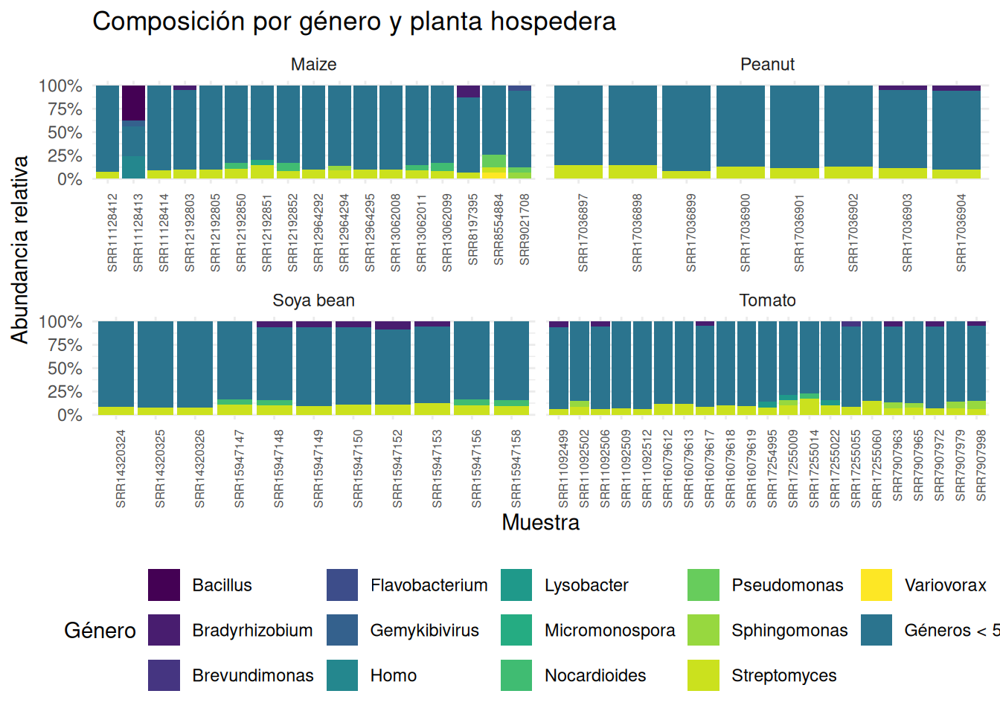
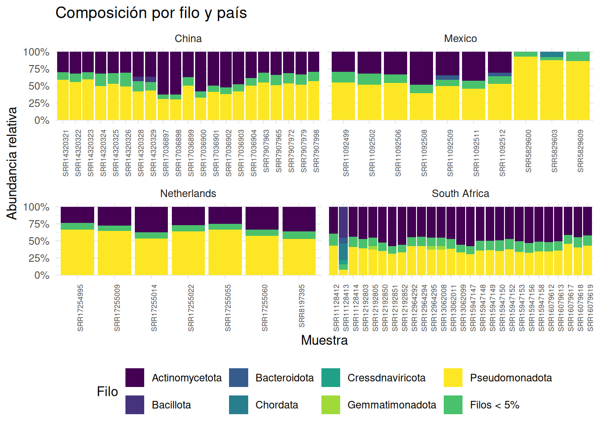

# Borrar memoria
rm(list = ls())
# Directorio de trabajo
getwd()[1] "/home/arobles/Intro_a_R/clases"# 2.8.1 Ejemplo código
a <- 2
b <- 3
suma <- a + b
suma[1] 5# Borrar memoria
rm(list = ls())
# Directorio de trabajo
getwd()[1] "/home/arobles/Intro_a_R/clases"# 2.8.1 Ejemplo código
a <- 2
b <- 3
suma <- a + b
suma[1] 5# install.packages("tidyverse")# install.packages("BiocManager") # Esto es necesario solo 1 vez# remove.packages("package-to-remove")library(ggplot2)# "ggplot2" %in% rownames(installed.packages())
# packageVersion("ggplot2")
# installed.packages()[, c("Package", "Version")]
# help(package = "ggplot2")
# ?plot# update.packages(ask = TRUE) # Instalar paquertería
# install.packages("remotes")
# Instalar versión deseada
# remotes::install_version(
# "dplyr",
# version = "1.1.4",
# repos = "https://cloud.r-project.org"
# )
# Verificar que se instaló
packageVersion("dplyr")[1] '1.2.1'| Clases | Declaración de la variable | Conversión de formato |
|---|---|---|
numeric |
numeric() |
as.numeric() |
integer |
integer() |
as.integer() |
double |
double() |
as.double() |
character |
character() |
as.character() |
logical |
logical() |
as.logical() |
factor |
factor() |
as.factor() |
NOTA: as.integer() convierte los numeros a enteros. Ejemplo: as.integer(2.5) = 2. En cambio, as.double() permite que los numeros contengan decimales.
Asignación:
identificador <- "gene_001"
longitud <- 450L
proporcion_gc <- 0.53
anotado <- TRUEConocer class, typeof y str:
# class
class(identificador) [1] "character"class(longitud)[1] "integer"class(proporcion_gc) [1] "numeric"class(anotado) [1] "logical"class(1.5)[1] "numeric"# typeof
typeof(1.5)[1] "double"# str
str(identificador) chr "gene_001"| Estructura | Dimensión | Homogeneidad | Ejemplo | Uso típico |
|---|---|---|---|---|
| Vector | 1D | Homogénea (todos del mismo tipo) | c(1,2,3) |
Secuencias simples de números, caracteres o lógicos |
| Lista | 1D | Heterogénea (puede mezclar tipos) | list(a=1:3, b="hola") |
Agrupar objetos distintos, resultados de modelos |
| Matriz | 2D | Homogénea | matrix(1:6, nrow=2) |
Cálculos numéricos, álgebra lineal |
| Array | nD (más de 2 dimensiones) | Homogénea | array(1:8, dim=c(2,2,2)) |
Datos multidimensionales, imágenes, series temporales |
| Data frame | 2D | Heterogénea (cada columna puede ser de distinto tipo) | data.frame(x=1:3, y=c("a","b","c")) |
Datos tabulares, análisis estadístico |
| Tibble | 2D | Heterogénea | tibble(x=1:3, y=c("a","b","c")) |
Variante moderna de data frame, impresión más clara |
genes <- c("gA", "gB", "gC", "gD")
longitudes <- c(150, 400, 220, 510)
length(genes)[1] 4genes[1][1] "gA"genes[c(2, 4)][1] "gB" "gD"genes[longitudes >= 300][1] "gB" "gD"longitudes / 3[1] 50.00000 133.33333 73.33333 170.00000longitudes >= 300[1] FALSE TRUE FALSE TRUEsum(longitudes >= 300)[1] 2# creando vectores
ids <- c("g1", "g2", "g3", "g4", "g5")
tam <- c(90, 450, 310, 120, 600)
# 1. Seleccionamos tercer identificador
ids[3][1] "g3"# 2. Recuperamos los ids de genes con long >= 300
ids[tam >= 300] [1] "g2" "g3" "g5"# 3. Contar cuántos cumplen esa condición sin usar ciclo
sum(tam >= 300)[1] 3valores <- c("12", "18", "sin_dato", "NA")
# La conversión produce una advertencia; no la ejecutamos automáticamente
# as.numeric(valores) # O podemos preguntar directamente si hay valores faltantes en un vector.
is.na(c(10, NA, 20)) [1] FALSE TRUE FALSEconteos <- matrix(
c(12, 8, 4, 6, 10, 2),
nrow = 3,
dimnames = list(c("g1", "g2", "g3"), c("M1", "M2"))
)
conteos M1 M2
g1 12 6
g2 8 10
g3 4 2# extraer posición
conteos[2, 1][1] 8conteos[, "M2"] g1 g2 g3
6 10 2 # para conocer dimensión
dim(conteos)[1] 3 2# crear arreglo y ver dimensión
arreglo <- array(1:8, dim = c(2, 2, 2))
dim(arreglo) [1] 2 2 2# creando dataframe
anotaciones <- data.frame(
gen = c("g1", "g2", "g3"),
longitud = c(450, 120, 800),
producto = c("transportador", "hipotetica", "enzima")
)
anotaciones gen longitud producto
1 g1 450 transportador
2 g2 120 hipotetica
3 g3 800 enzima# integridad de mi dataframe
str(anotaciones) 'data.frame': 3 obs. of 3 variables:
$ gen : chr "g1" "g2" "g3"
$ longitud: num 450 120 800
$ producto: chr "transportador" "hipotetica" "enzima"# extraer columna
anotaciones$longitud [1] 450 120 800# extraer fila 2
anotaciones[2, ] gen longitud producto
2 g2 120 hipotetica# extrae las filas en las que la long fue mayor a 200
anotaciones[anotaciones$longitud > 200, ] gen longitud producto
1 g1 450 transportador
3 g3 800 enzimaUn tibble es una variante moderna de data.frame, con una impresión más compacta y comportamientos de selección más consistentes.
# Requiere haber instalado tibble
# tibble::as_tibble(anotaciones)Las listas pueden almacenar objetos de distintos tipos y tamaños. Resultan útiles para reunir resultados de un análisis.
# creando lista
muestra <- list(
id = "M01",
secuencias = c("ATGCGT", "CCATGA"),
anotaciones = anotaciones
)
# Extraer la lista, es un vector
muestra$id[1] "M01"muestra[["secuencias"]] # es lo mismo que lo de arriba [1] "ATGCGT" "CCATGA"# Conserva la estructura de una lista
muestra["secuencias"] $secuencias
[1] "ATGCGT" "CCATGA"Un factor representa categorías con niveles definidos. Su orden puede importar al crear tablas o gráficos.
# creamos un factor y la guardamos en variable
condicion <- factor(c("control", "tratamiento", "control"),
levels = c("control", "tratamiento"))
# niveles del factor
levels(condicion)[1] "control" "tratamiento"Crea una vector con las letras A M A B M M B A B B, donde A significa Alto, B bajo y M medio. Convierte las entradas del vector a factores y especifica que A > M > B.
# creando vector
datos <- c("A", "M", "A", "B", "M", "M", "B", "A", "B", "B")
# convertir a factor
fac <- factor(datos,
levels = c("B", "M", "A"),
labels = c("Bajo", "Medio", "Alto"),
ordered = TRUE)
fac [1] Alto Medio Alto Bajo Medio Medio Bajo Alto Bajo Bajo
Levels: Bajo < Medio < Alto# se ordena de menor a mayor | Estructura | Dimensiones | ¿Elementos del mismo tipo? | Ejemplo de uso |
|---|---|---|---|
| Vector | 1 | Sí | Identificadores o longitudes |
| Matriz | 2 | Sí | Conteos por gen y muestra |
| Array | 2 o más | Sí | Datos multidimensionales |
| Data frame / tibble | 2 | Por columna | Tabla de anotaciones |
| Lista | Variable | No | Resultados heterogéneos |
Construye un data.frame con tres genes, sus longitudes y una etiqueta funcional.
Recupera únicamente las filas con longitud mayor que 200.
Crea una lista que contenga la tabla y el identificador de una muestra.
Explica por qué una matriz de caracteres no sería una buena sustitución para la tabla cuando queremos conservar longitudes numéricas.
# creamos data.frame
data <- data.frame(
genes = c("BRCA1", "TP53", "BRCA2"),
long = c(100, 230, 121),
funcion = c("Supresor tumoral", "guardián", "Supresor tumoral")
)
# Recuperamos las filas con long mayor que 200
filtrado <- data[data$long >= 200, ]
# Creamos lista con tabla e identificador de una muestra
info_lista <- list(
tabla = filtrado,
muestra = "0-11"
)
print(info_lista)$tabla
genes long funcion
2 TP53 230 guardián
$muestra
[1] "0-11"| Aritméticos | Comparación | Argumentos lógicos (Logical Operators) |
|---|---|---|
+ Adición / suma |
< Menor que |
!x - Not x (logical NOT) |
- Sustracción / resta |
> Mayor que |
x & y OR x AND y - (logical AND) |
* Multiplicación |
<= Menor o igual que |
x && y - identico |
/ OR %% División |
>= Mayor o igual que |
xor(x,y) Funcion OR |
^ OR ** Exponencial |
== Igual a |
%in% pertenece a |
%/% División integral |
!= Diferente de |
Otra forma de escribir OR es x | y OR x || y.
| 1 | ^ |
| 2 | * / |
| 3 | + - |
| 4 | < > <= >= == != |
| 5 | ! |
| 6 | & |
| 7 | OR |
if, else if y else# creando variables
secuencia <- "ATGCGT"
longitud <- nchar(secuencia)
# usando condicional if
if (longitud >= 10) {
print("La secuencia tiene al menos 10 nucleótidos")
}
if (longitud >= 10) {
print("La secuencia tiene al menos 10 nucleótidos")
} else {
print("La secuencia tiene menos de 10 nucleótidos")
} [1] "La secuencia tiene menos de 10 nucleótidos"# usando else if
if (longitud >= 20) {
print("Secuencia larga")
} else if (longitud >= 10) {
print("Secuencia mediana")
} else {
print("Secuencia corta")
} [1] "Secuencia corta"# variable
valor <- -3
# if anidado
if (is.na(valor)) {
print("El valor está ausente")
} else {
if (valor < 0) {
print("Es negativo")
} else if (valor > 0) {
print("Es positivo")
} else {
print("Es cero")
}
}[1] "Es negativo"# sin anidamiento
if (is.na(valor)) {
print("El valor está ausente")
} else if (valor < 0) {
print("Es negativo")
} else if (valor > 0) {
print("Es positivo")
} else {
print("Es cero")
} [1] "Es negativo"Define una variable conteo que represente el número de lecturas asignadas a un gen. Escribe un condicional que imprima:
"Dato faltante" si el valor es NA.
"Conteo inválido" si es negativo.
"Sin lecturas" si es cero.
"Con lecturas" si es positivo.
Prueba tu código con NA, -2, 0 y 15.
conteo <- 5
if (is.na(conteo)) {
print("Dato faltante")
} else if (conteo < 0) {
print("Conteo invalido")
} else if (conteo == 0) {
print("Sin lecturas")
} else {
print("Con lecturas")
}[1] "Con lecturas"ifelse(), all(), any() y which()La función ifelse() evalúa una condición elemento por elemento y devuelve un resultado de acuerdo con si cada elemento satisface la condición.
conteos <- c(0, 12, 4, 0, 25)
estado <- ifelse(conteos > 0, "Detectado", "No detectado")
estado [1] "No detectado" "Detectado" "Detectado" "No detectado" "Detectado" En cambio, all(), any() y which() resumen o localizan los resultados de comparaciones lógicas:
conteos <- c(0, 12, 4, 0, 25)
# all
all(conteos >= 0) # ¿Todos los conteos son no negativos? [1] TRUE# any
any(conteos == 0) # ¿Existe al menos un cero?[1] TRUE# which
which(conteos == 0) # ¿En qué posiciones hay ceros?[1] 1 4Considera el vector conteos <- c(8, 0, 13, 5, 0, 21). Utiliza las funciones anteriores para:
Verificar si todos los valores son no negativos.
Determinar si existe al menos un conteo mayor que 20.
Obtener las posiciones de los conteos iguales a cero.
Crear un vector que indique "Presente" o "Ausente" según si el conteo es mayor que cero.
# creando vector
conteos <- c(8, 0, 13, 5, 0, 21)
# verificando si todos los valores son negativos
all(conteos == 0) [1] FALSE# determinar si existe al menos un conteo mayor que 20
any(conteos > 20) [1] TRUE# obtener posiciones de conteos = 0
which(conteos == 0) [1] 2 5# creando vector que indique Presente o Ausente si conteo es mayor a 0
estado <- ifelse(conteos > 0, "Presente", "Ausente")
estado [1] "Presente" "Ausente" "Presente" "Presente" "Ausente" "Presente"for#for (elemento in coleccion) {
# Instrucciones que se ejecutan para cada elemento
#}
# ejemplo de recorrer los números del 1 al 5
for (i in 1:5) {
print(i)
}[1] 1
[1] 2
[1] 3
[1] 4
[1] 5secuencias <- c("ATGC", "ATGCGT", "CCATGAA")
for (secuencia in secuencias) {
print(nchar(secuencia))
}[1] 4
[1] 6
[1] 7# nchar cuenta carácteres
# para guardar las longitudes
longitudes <- numeric(length(secuencias))
for (i in seq_along(secuencias)) {
longitudes[i] <- nchar(secuencias[i])
}
longitudes[1] 4 6 7Aquí seq_along(secuencias) genera las posiciones del vector.
for e ifsecuencias <- c("ATGC", "ATGCGT", "CCATGAA")
for (secuencia in secuencias) {
if (nchar(secuencia) >= 6) {
print("Longitud de al menos 6 nucleótidos")
} else {
print("Longitud menor que 6 nucleótidos")
}
} [1] "Longitud menor que 6 nucleótidos"
[1] "Longitud de al menos 6 nucleótidos"
[1] "Longitud de al menos 6 nucleótidos"Utiliza un ciclo for para guardar las longitudes en un vector llamado longitudes.
Crea otro vector llamado clasificacion que contenga "Corta" para longitudes menores que 5 y "Larga" para longitudes de al menos 5.
Muestra ambos vectores.
# creando vector
secuencias <- c("ATG", "ATGCGT", "AATTCCGG", "CG")
# usar ciclo for para guardar longs
longitudes <- numeric(length(secuencias))
for (i in seq_along(secuencias)) {
longitudes[i] <- nchar(secuencias[i])
}
longitudes [1] 3 6 8 2# vector de clasificacion
clasificacion <- ifelse(longitudes < 5, "Corta", "Larga")
clasificacion[1] "Corta" "Larga" "Larga" "Corta"whilewhile repite un bloque de instrucciones mientras una condición sea verdadera.
#while (condicion) {
# Instrucciones que se repiten mientras la condición sea TRUE
# }
i <- 0
while (i < 5) {
print(i)
i <- i + 1
}[1] 0
[1] 1
[1] 2
[1] 3
[1] 4# evitar ciclos infinitos
i <- 0
while (i < 5) {
print(i)
i <- i + 1
} [1] 0
[1] 1
[1] 2
[1] 3
[1] 4Queremos encontrar el primer entero positivo cuyo cuadrado sea mayor que 50:
limite <- 50
numero <- 0
while (numero^2 <= limite) {
numero <- numero + 1
}
numero[1] 8numero^2[1] 64secuencia <- "ATGCGT"
posicion <- 1
fragmentos <- character(nchar(secuencia))
while (posicion <= nchar(secuencia)) {
fragmentos[posicion] <- substr(secuencia, 1, posicion)
posicion <- posicion + 1
}
fragmentos[1] "A" "AT" "ATG" "ATGC" "ATGCG" "ATGCGT"La función substr(secuencia, 1, posicion) extrae los caracteres comprendidos entre las posiciones indicadas.
Imagina que estamos construyendo una secuencia mediante la adición de un nucleótido "A" en cada iteración. Escribe un ciclo while que comience con una cadena vacía y se detenga cuando la secuencia alcance 8 nucleótidos. Muestra el resultado final.
sec <- ""
while (nchar(sec) < 8) {
sec <- paste0(sec, "A")
}
sec[1] "AAAAAAAA"nchar(sec)[1] 8length(x) devuelve el número de elementos de un vector o una lista.
nchar(x) devuelve el número de caracteres de una cadena de texto.
secuencia <- "ATGCGTA"
length(secuencia)[1] 1nchar(secuencia)[1] 7| Estructura | ¿Para qué sirve? | Ejemplo de aplicación |
|---|---|---|
if / else |
Elegir entre alternativas a partir de una condición única. | Verificar si un conteo es válido. |
ifelse() |
Clasificar elementos de un vector. | Etiquetar conteos positivos y ceros. |
for |
Recorrer una colección de elementos. | Calcular la longitud de varias secuencias. |
while |
Repetir hasta que deje de cumplirse una condición. | Construir una secuencia hasta alcanzar una longitud. |
Una función recibe argumentos, ejecuta instrucciones y devuelve un resultado. En R se construye con function() y se asigna a un nombre mediante <-.
#nombre_funcion <- function(argumentos) {
# Instrucciones
# resultado
#}longitud_adn <- function(secuencia) {
longitud <- nchar(secuencia)
return(longitud)
}
longitud_adn("ATGCGTAA")[1] 8longitud_adn("CCGTA")[1] 5# sin return
longitud_adn <- function(secuencia) {
nchar(secuencia)
}
longitud_adn("ATGCGTAA")[1] 8# usando grepl
contiene_motivo <- function(secuencia, motivo) {
grepl(motivo, secuencia, fixed = TRUE)
}
contiene_motivo("ATGCGTAA", "CGT")[1] TRUEcontiene_motivo("ATGCGTAA", "GGG")[1] FALSEEl argumento fixed = TRUE indica que buscamos el motivo como texto literal, sin interpretarlo como una expresión regular. La función devuelve TRUE o FALSE.
Escribe una función llamada empieza_con que reciba una secuencia y un prefijo, y determine si la secuencia comienza con ese prefijo. Pruébala con "ATGCGT" y los prefijos "ATG" y "TGA".
empieza_con <- function(secuencia, prefijo) {
startsWith(secuencia, prefijo)
}
empieza_con("ATGCGT", "ATG")[1] TRUEempieza_con("ATGCGT", "TGA")[1] FALSEpreparar_secuencia <- function(secuencia, tipo = "ADN", mayusculas = TRUE) {
if (mayusculas) {
secuencia <- toupper(secuencia)
}
if (tipo == "ARN") {
secuencia <- chartr("T", "U", secuencia)
}
secuencia
}
preparar_secuencia("atgcgt")[1] "ATGCGT"preparar_secuencia("atgcgt", tipo = "ARN")[1] "AUGCGU"preparar_secuencia("atgcgt", mayusculas = FALSE)[1] "atgcgt"preparar_secuencia("atgcgt", tipo = "ARN", mayusculas = TRUE)[1] "AUGCGU"Supongamos que queremos resumir una secuencia de ADN mediante su identificador, longitud y número de nucleótidos G y C.
resumir_adn <- function(id, secuencia) {
secuencia <- toupper(secuencia)
bases <- strsplit(secuencia, split = "", fixed = TRUE)[[1]]
list(
id = id,
longitud = nchar(secuencia),
conteo_gc = sum(bases %in% c("G", "C"))
)
}
resultado <- resumir_adn("GEN_01", "ATGCGTAA")
resultado $id
[1] "GEN_01"
$longitud
[1] 8
$conteo_gc
[1] 3resultado$id[1] "GEN_01"resultado[["longitud"]][1] 8Modifica resumir_adn() para que también devuelva la proporción de nucleótidos G y C respecto de la longitud total. Prueba la función con una secuencia no vacía.
resumir_adn <- function(id, secuencia) {
secuencia <- toupper(secuencia)
bases <- strsplit(secuencia, "", fixed = TRUE)[[1]]
longitud <- nchar(secuencia)
conteo_gc <- sum(bases %in% c("G", "C"))
proporcion_gc <- conteo_gc/longitud
list(
id = id,
longitud = longitud,
conteo_gc = conteo_gc,
proporcion_gc = proporcion_gc
)
}
resumir_adn("GEN_01", "ATGCGTAA")$id
[1] "GEN_01"
$longitud
[1] 8
$conteo_gc
[1] 3
$proporcion_gc
[1] 0.375stop() y stopifnot()validar_adn <- function(secuencia) {
if (!is.character(secuencia) ||
length(secuencia) != 1 ||
is.na(secuencia) ||
!grepl("^[ACGT]+$", toupper(secuencia))) {
stop("Se requiere una secuencia no vacía con bases A, C, G o T.")
}
TRUE
}
validar_adn("ATGCGT")[1] TRUE# validar_adn("ATNG") # Error: contiene N
# validar_adn(1234) # Error: no es textoEn esta función, ^[ACGT]+$ es una expresión regular: exige que todos los caracteres sean A, C, G o T, y que exista al menos uno.
longitud_validada <- function(secuencia) {
stopifnot(
is.character(secuencia),
length(secuencia) == 1,
!is.na(secuencia)
)
nchar(secuencia)
}
longitud_validada("ATGCGT")[1] 6revisar_secuencias <- function(secuencias) {
# Creamos el vector de resultados lógico (FALSE) de longitud n
resultado <- logical(length(secuencias))
for (i in seq_along(secuencias)) {
# Extraemos la secuencia i y la guardamos en secuencia temporalmente
secuencia <- secuencias[i]
if (is.na(secuencia)) {
# si es vacía asignamos FALSE
resultado[i] <- FALSE
} else {
# si no es vacía, verificamos que silo contenga A, C, G o T
resultado[i] <- grepl("^[ACGT]+$", toupper(secuencia))
}
}
resultado
}
secuencias <- c("ATGCGT", "ACNTGA", "ttacga", NA)
revisar_secuencias(secuencias)[1] TRUE FALSE TRUE FALSElogical(length(secuencias)) crea un vector lógico para almacenar los resultados, mientras que seq_along(secuencias) genera los índices necesarios para recorrer el vector.
Crea una función llamada clasificar_secuencias que reciba un vector de secuencias y devuelva una lista con dos elementos:
validas: las secuencias formadas únicamente por A, C, G y T.
invalidas: las secuencias que contienen otros caracteres o valores faltantes.
Utiliza la función revisar_secuencias() del ejemplo anterior.
clasificar_secuencias <- function(secuencias) {
stopifnot(is.character(secuencias))
es_valida <- revisar_secuencias(secuencias)
list(
validas = secuencias[es_valida],
invalidas = secuencias[!es_valida]
)
}
clasificar_secuencias(c("ATGCGT", "ACNTGA", "ttacga", NA))$validas
[1] "ATGCGT" "ttacga"
$invalidas
[1] "ACNTGA" NA Escribe una función crearr_reporte_secuencias(ids, secuencias) que:
Compruebe que ambos argumentos son vectores de caracteres y tienen la misma longitud.
Identifique las secuencias válidas mediante revisar_secuencias().
Devuelva un data.frame con las columnas id, secuencia, longitud y valida.
Asigne NA a la longitud de las secuencias inválidas.
ids <- c("seq_01", "seq_02", "seq_03", "seq_04")
secuencias <- c("ATGCGT", "ACNTGA", "GGCCAA", "TTTAAA")
# creando funcion
crear_reporte_secuencias <- function(ids, secuencias) {
stopifnot(is.character(secuencias),
length(ids) == length(secuencias))
longitud <- nchar(secuencias)
valida <- revisar_secuencias(secuencias)
longitud[!valida] <- NA
data.frame(
id = ids,
secuencia = secuencias,
longitud = longitud,
valida = valida
)
}
crear_reporte_secuencias(ids, secuencias) id secuencia longitud valida
1 seq_01 ATGCGT 6 TRUE
2 seq_02 ACNTGA NA FALSE
3 seq_03 GGCCAA 6 TRUE
4 seq_04 TTTAAA 6 TRUEConsidera el siguiente código, guardado en un archivo llamado revision.R:
# longitudes <- nchar(secuencias)
# resultado <- data.frame(id = ids, longitud = longitudes)
# print(resultado)Un estudiante afirma que el archivo funciona porque obtuvo una tabla al ejecutarlo en su computadora.
# codigo corregido con las especificaciones
revision <- function(ids, secuencias) {
longitudes <- nchar(secuencias)
resultado <- data.frame(
id = ids,
longitud = longitudes
)
return(resultado)
}
revision(
c("seq_01", "seq_02", "seq_03", "seq_04"),
c("ATGCGT", "ACNTGA", "GGCCAA", "TTTAAA")
) id longitud
1 seq_01 6
2 seq_02 6
3 seq_03 6
4 seq_04 6# --------------------------------------------------
# Análisis básico de secuencias de ADN
# Objetivo: revisar secuencias y resumir longitudes
# --------------------------------------------------
# 1. Datos de entrada
muestras <- c("M01", "M02", "M03", "M04")
secuencias <- c("ATGCCG", "ATNNGA", "GGCTTA", "ATG")
# 2. Verificar que hay un identificador por secuencia
stopifnot(length(muestras) == length(secuencias))
# 3. Procesar los datos
longitudes <- nchar(secuencias)
secuencia_valida <- grepl("^[ACGT]+$", secuencias)
# 4. Organizar y mostrar los resultados
resumen <- data.frame(
muestra = muestras,
secuencia = secuencias,
longitud = longitudes,
valida = secuencia_valida
)
print(resumen) muestra secuencia longitud valida
1 M01 ATGCCG 6 TRUE
2 M02 ATNNGA 6 FALSE
3 M03 GGCTTA 6 TRUE
4 M04 ATG 3 TRUE# Directorio de trabajo actual
getwd() [1] "/home/arobles/Intro_a_R"# listar los archivos de una carpeta
list.files("data_raw/datos_sesion_02_blast") [1] "blast_comentarios.tsv" "blast_separador_incorrecto.csv"
[3] "blast_valores_faltantes.tsv" "metadata_secuencias.csv"
[5] "README.md" "resultados_blast.tsv"
[7] "secuencias.fasta" # verifica que un archivo exista
file.exists("data_raw/datos_sesion_02_blast/resultados_blast.tsv")[1] TRUE# te da la informacion de un archivo
file.info("data_raw/datos_sesion_02_blast/resultados_blast.tsv") size isdir mode
data_raw/datos_sesion_02_blast/resultados_blast.tsv 806 FALSE 644
mtime
data_raw/datos_sesion_02_blast/resultados_blast.tsv 2026-11-04 04:51:20
ctime
data_raw/datos_sesion_02_blast/resultados_blast.tsv 2026-11-05 16:53:12
atime uid
data_raw/datos_sesion_02_blast/resultados_blast.tsv 2026-11-24 12:16:15 1000
gid uname grname
data_raw/datos_sesion_02_blast/resultados_blast.tsv 1000 arobles arobles# nombra a un archivo y luego verifica que exista
archivo_blast <- "data_raw/datos_sesion_02_blast/resultados_blast.tsv"
file.exists(archivo_blast) [1] TRUE# cargamos librería
readLines(archivo_blast, n = 5) [1] "query_id\tsubject_id\tpident\tlength\tevalue\tbitscore"
[2] "seq01\tref_001\t87.9\t216\t1.00e-40\t118.7"
[3] "seq01\tref_002\t68.2\t245\t1.00e-36\t184.6"
[4] "seq01\tref_003\t93.5\t168\t1.00e-35\t386.1"
[5] "seq02\tref_004\t82.6\t111\t1.00e-85\t259.9" | Extensión habitual | Contenido frecuente | Separador o estructura |
|---|---|---|
.csv |
Tabla | Comas, aunque depende de cómo se exportó |
.tsv |
Tabla | Tabulaciones |
.txt |
Texto o tabla | Depende del archivo |
.fasta / .fa |
Secuencias | Encabezados > y líneas de secuencia |
.gz |
Archivo comprimido | Depende del formato interno |
Sin abrirlo en una hoja de cálculo, utiliza R para comprobar que existe blast_separador_incorrecto.csv, mostrar sus tres primeras líneas y determinar qué separador utiliza realmente.
# mostrar que exista
file.exists("data_raw/datos_sesion_02_blast//blast_separador_incorrecto.csv") [1] TRUE# mostrar sus tres primeras lineas
readLines("data_raw/datos_sesion_02_blast/blast_separador_incorrecto.csv", n = 3) [1] "query_id\tsubject_id\tpident\tlength\tevalue\tbitscore"
[2] "seq01\tref_001\t87.9\t216\t1.00e-40\t118.7"
[3] "seq01\tref_002\t68.2\t245\t1.00e-36\t184.6" # determinar el separador
readLines("data_raw/datos_sesion_02_blast/blast_separador_incorrecto.csv", n=1)[1] "query_id\tsubject_id\tpident\tlength\tevalue\tbitscore"blast <- read.delim("data_raw/datos_sesion_02_blast/resultados_blast.tsv")
metadata <- read.csv("data_raw/datos_sesion_02_blast/metadata_secuencias.csv",
colClasses = c(codigo_muestra = "character"))
class(blast) [1] "data.frame"head(blast) query_id subject_id pident length evalue bitscore
1 seq01 ref_001 87.9 216 1e-40 118.7
2 seq01 ref_002 68.2 245 1e-36 184.6
3 seq01 ref_003 93.5 168 1e-35 386.1
4 seq02 ref_004 82.6 111 1e-85 259.9
5 seq02 ref_005 68.7 292 1e-57 322.6
6 seq03 ref_007 88.2 254 1e-05 361.9head(metadata) query_id organismo origen codigo_muestra
1 seq01 Bacteria_A suelo 001
2 seq02 Bacteria_B agua 002
3 seq03 Bacteria_C suelo 003
4 seq04 Bacteria_A agua 004
5 seq05 Bacteria_B suelo 005
6 seq06 Bacteria_C agua 006readrDa mensajes sobre los tipos de columnas y herramientas para detectar problemas de lectura.
blast <- readr::read_tsv(
"data_raw/datos_sesion_02_blast/resultados_blast.tsv",
show_col_types = FALSE
)
metadata <- readr::read_csv(
"data_raw/datos_sesion_02_blast/metadata_secuencias.csv",
col_types = readr::cols(codigo_muestra = readr::col_character()),
show_col_types = FALSE
)
class(blast)[1] "spec_tbl_df" "tbl_df" "tbl" "data.frame" class(metadata)[1] "spec_tbl_df" "tbl_df" "tbl" "data.frame" Para consultar posteriormente los tipos de datos detectados, se puede utilizar readr::spec(blast).
| R base | readr |
Uso |
|---|---|---|
read.csv() |
read_csv() |
Archivos separados por comas |
read.delim() |
read_tsv() |
Archivos separados por tabulaciones |
read.table() |
read_delim() |
Archivos con separador configurable |
readLines("data_raw/datos_sesion_02_blast/blast_comentarios.tsv", n = 4)[1] "# Resultado ilustrativo, no generado por BLAST"
[2] "# Columnas: query_id, subject_id, pident, length, evalue, bitscore"
[3] "query_id\tsubject_id\tpident\tlength\tevalue\tbitscore"
[4] "seq01\tref_001\t87.9\t216\t1.00e-40\t118.7" blast_con_comentarios <- readr::read_tsv(
"data_raw/datos_sesion_02_blast/blast_comentarios.tsv",
comment = "#",
show_col_types = FALSE
)
head(blast_con_comentarios)# A tibble: 6 × 6
query_id subject_id pident length evalue bitscore
<chr> <chr> <dbl> <dbl> <dbl> <dbl>
1 seq01 ref_001 87.9 216 1e-40 119.
2 seq01 ref_002 68.2 245 1e-36 185.
3 seq01 ref_003 93.5 168 1e-35 386.
4 seq02 ref_004 82.6 111 1e-85 260.
5 seq02 ref_005 68.7 292 1e-57 323.
6 seq03 ref_007 88.2 254 1e- 5 362.# agregamos función para saber si tiene NA
blast_na <- readr::read_tsv(
"data_raw/datos_sesion_02_blast/blast_valores_faltantes.tsv",
na = c("", "NA"),
show_col_types = FALSE
)
anyNA(blast_na)[1] TRUE# consultar la estructura de un objeto en R
str(blast) spc_tbl_ [20 × 6] (S3: spec_tbl_df/tbl_df/tbl/data.frame)
$ query_id : chr [1:20] "seq01" "seq01" "seq01" "seq02" ...
$ subject_id: chr [1:20] "ref_001" "ref_002" "ref_003" "ref_004" ...
$ pident : num [1:20] 87.9 68.2 93.5 82.6 68.7 88.2 93.6 97.8 99 83.9 ...
$ length : num [1:20] 216 245 168 111 292 254 319 191 229 162 ...
$ evalue : num [1:20] 1e-40 1e-36 1e-35 1e-85 1e-57 ...
$ bitscore : num [1:20] 119 185 386 260 323 ...
- attr(*, "spec")=
.. cols(
.. query_id = col_character(),
.. subject_id = col_character(),
.. pident = col_double(),
.. length = col_double(),
.. evalue = col_double(),
.. bitscore = col_double()
.. )
- attr(*, "problems")=<pointer: 0x5d234ad94e50> # consultar las especificaciones de las columnas
readr::spec(blast) cols(
query_id = col_character(),
subject_id = col_character(),
pident = col_double(),
length = col_double(),
evalue = col_double(),
bitscore = col_double()
)# identificar problemas detectados durante la importación de los datos
readr::problems(blast)# A tibble: 0 × 5
# ℹ 5 variables: row <int>, col <int>, expected <chr>, actual <chr>, file <chr>Para observar cómo funciona problems() cuando se detectan errores de importación:
# cargamos readr
library(readr)
# # Simulamos el contenido de un archivo TSV
blast_error <- read_tsv(
I("secuencia\tidentidad
seq1\t98.5
seq2\t95.2
seq3\terror
seq4\t99.1"),
col_types = cols(
secuencia = col_character(),
identidad = col_double()
)
)Warning: One or more parsing issues, call `problems()` on your data frame for details,
e.g.:
dat <- vroom(...)
problems(dat)# # Revisamos los datos importados
blast_error# A tibble: 4 × 2
secuencia identidad
<chr> <dbl>
1 seq1 98.5
2 seq2 95.2
3 seq3 NA
4 seq4 99.1# # Consultamos los problemas de importación
problems(blast_error)# A tibble: 1 × 5
row col expected actual file
<int> <int> <chr> <chr> <chr>
1 4 2 a double error /tmp/Rtmp7mnM4U/vroom-chr-to-file-dd3d49f7fd1bImporta metadata_secuencias.csv y blast_comentarios.tsv utilizando readr. Conserva codigo_muestra como texto. Comprueba la clase de cada objeto y muestra sus primeras filas.
blast <- readr::read_tsv(
"data_raw/datos_sesion_02_blast/resultados_blast.tsv",
show_col_types = FALSE
)
metadata <- readr::read_csv(
"data_raw/datos_sesion_02_blast/metadata_secuencias.csv",
col_types = readr::cols(codigo_muestra = readr::col_character()),
show_col_types = FALSE
)
class(blast)[1] "spec_tbl_df" "tbl_df" "tbl" "data.frame" class(metadata)[1] "spec_tbl_df" "tbl_df" "tbl" "data.frame" head(blast)# A tibble: 6 × 6
query_id subject_id pident length evalue bitscore
<chr> <chr> <dbl> <dbl> <dbl> <dbl>
1 seq01 ref_001 87.9 216 1e-40 119.
2 seq01 ref_002 68.2 245 1e-36 185.
3 seq01 ref_003 93.5 168 1e-35 386.
4 seq02 ref_004 82.6 111 1e-85 260.
5 seq02 ref_005 68.7 292 1e-57 323.
6 seq03 ref_007 88.2 254 1e- 5 362.head(metadata)# A tibble: 6 × 4
query_id organismo origen codigo_muestra
<chr> <chr> <chr> <chr>
1 seq01 Bacteria_A suelo 001
2 seq02 Bacteria_B agua 002
3 seq03 Bacteria_C suelo 003
4 seq04 Bacteria_A agua 004
5 seq05 Bacteria_B suelo 005
6 seq06 Bacteria_C agua 006 dim(blast) # Filas y columnas [1] 20 6nrow(blast) # Número de filas[1] 20ncol(blast) # Número de columnas[1] 6names(blast) # Nombres de columnas[1] "query_id" "subject_id" "pident" "length" "evalue"
[6] "bitscore" head(blast, 4) # Primeras cuatro filas# A tibble: 4 × 6
query_id subject_id pident length evalue bitscore
<chr> <chr> <dbl> <dbl> <dbl> <dbl>
1 seq01 ref_001 87.9 216 1e-40 119.
2 seq01 ref_002 68.2 245 1e-36 185.
3 seq01 ref_003 93.5 168 1e-35 386.
4 seq02 ref_004 82.6 111 1e-85 260.tail(blast, 3) # Últimas tres filas# A tibble: 3 × 6
query_id subject_id pident length evalue bitscore
<chr> <chr> <dbl> <dbl> <dbl> <dbl>
1 seq07 ref_021 77.4 104 1e-54 174.
2 seq08 ref_022 69.9 205 1e-75 306.
3 seq08 ref_023 68.8 308 1e-63 152.str(blast) # Estructura y tiposspc_tbl_ [20 × 6] (S3: spec_tbl_df/tbl_df/tbl/data.frame)
$ query_id : chr [1:20] "seq01" "seq01" "seq01" "seq02" ...
$ subject_id: chr [1:20] "ref_001" "ref_002" "ref_003" "ref_004" ...
$ pident : num [1:20] 87.9 68.2 93.5 82.6 68.7 88.2 93.6 97.8 99 83.9 ...
$ length : num [1:20] 216 245 168 111 292 254 319 191 229 162 ...
$ evalue : num [1:20] 1e-40 1e-36 1e-35 1e-85 1e-57 ...
$ bitscore : num [1:20] 119 185 386 260 323 ...
- attr(*, "spec")=
.. cols(
.. query_id = col_character(),
.. subject_id = col_character(),
.. pident = col_double(),
.. length = col_double(),
.. evalue = col_double(),
.. bitscore = col_double()
.. )
- attr(*, "problems")=<pointer: 0x5d23495c9080> summary(blast) # Resumen por columna query_id subject_id pident length
Length :20 Length :20 Min. :68.20 Min. :101.0
N.unique : 8 N.unique :19 1st Qu.:72.58 1st Qu.:166.5
N.blank : 0 N.blank : 0 Median :83.25 Median :222.5
Min.nchar: 5 Min.nchar: 7 Mean :82.44 Mean :222.7
Max.nchar: 5 Max.nchar: 7 3rd Qu.:89.53 3rd Qu.:295.5
Max. :99.00 Max. :325.0
evalue bitscore
Min. :0.000e+00 Min. : 49.8
1st Qu.:0.000e+00 1st Qu.:133.6
Median :0.000e+00 Median :179.8
Mean :5.005e-07 Mean :217.3
3rd Qu.:0.000e+00 3rd Qu.:313.4
Max. :1.000e-05 Max. :410.8 blast$query_id # Una columna [1] "seq01" "seq01" "seq01" "seq02" "seq02" "seq03" "seq03" "seq03" "seq03"
[10] "seq04" "seq05" "seq05" "seq05" "seq06" "seq06" "seq07" "seq07" "seq07"
[19] "seq08" "seq08"blast[, c("query_id", "pident")]# A tibble: 20 × 2
query_id pident
<chr> <dbl>
1 seq01 87.9
2 seq01 68.2
3 seq01 93.5
4 seq02 82.6
5 seq02 68.7
6 seq03 88.2
7 seq03 93.6
8 seq03 97.8
9 seq03 99
10 seq04 83.9
11 seq05 75
12 seq05 88
13 seq05 85.4
14 seq06 80.8
15 seq06 71.3
16 seq07 95.7
17 seq07 73
18 seq07 77.4
19 seq08 69.9
20 seq08 68.8blast[1:5, ] # Primeras cinco filas # A tibble: 5 × 6
query_id subject_id pident length evalue bitscore
<chr> <chr> <dbl> <dbl> <dbl> <dbl>
1 seq01 ref_001 87.9 216 1e-40 119.
2 seq01 ref_002 68.2 245 1e-36 185.
3 seq01 ref_003 93.5 168 1e-35 386.
4 seq02 ref_004 82.6 111 1e-85 260.
5 seq02 ref_005 68.7 292 1e-57 323.blast[blast$query_id == "seq01", ] # solo las columnas con seq01 # A tibble: 3 × 6
query_id subject_id pident length evalue bitscore
<chr> <chr> <dbl> <dbl> <dbl> <dbl>
1 seq01 ref_001 87.9 216 1e-40 119.
2 seq01 ref_002 68.2 245 1e-36 185.
3 seq01 ref_003 93.5 168 1e-35 386.blast[blast$pident >= 90, ] # solo columnas con pident mayor o igual a 90 # A tibble: 5 × 6
query_id subject_id pident length evalue bitscore
<chr> <chr> <dbl> <dbl> <dbl> <dbl>
1 seq01 ref_003 93.5 168 1e-35 386.
2 seq03 ref_008 93.6 319 1e-36 96.6
3 seq03 ref_009 97.8 191 1e-71 97.9
4 seq03 ref_010 99 229 1e- 8 336.
5 seq07 ref_019 95.7 106 1e-70 138. # convertir a valores unicos
unique(blast$query_id) [1] "seq01" "seq02" "seq03" "seq04" "seq05" "seq06" "seq07" "seq08"# vuelve unicos los valores de una fila y mide longitud
length(unique(blast$query_id)) [1] 8# tabla
table(blast$query_id)
seq01 seq02 seq03 seq04 seq05 seq06 seq07 seq08
3 2 4 1 3 2 3 2 # los ordena de forma decresciente
sort(table(blast$query_id), decreasing = TRUE)
seq03 seq01 seq05 seq07 seq02 seq06 seq08 seq04
4 3 3 3 2 2 2 1 # suma los NA en cada columna
colSums(is.na(blast)) query_id subject_id pident length evalue bitscore
0 0 0 0 0 0 # pregunta si hay NA
anyNA(blast) [1] FALSECon resultados_blast.tsv, responde mediante código:
¿Cuántos registros y columnas tiene la tabla?
¿Cuántos query_id diferentes aparecen?
¿Cuántos resultados tiene cada consulta?
¿Qué filas tienen pident mayor o igual a 95?
¿Hay valores faltantes?
# 1.
ncol(blast)[1] 6nrow(blast)[1] 20# 2.
length(unique(blast$query_id)) [1] 8# 3.
table(blast$query_id)
seq01 seq02 seq03 seq04 seq05 seq06 seq07 seq08
3 2 4 1 3 2 3 2 # 3.
blast[(blast$pident) >= 95, ] # A tibble: 3 × 6
query_id subject_id pident length evalue bitscore
<chr> <chr> <dbl> <dbl> <dbl> <dbl>
1 seq03 ref_009 97.8 191 1e-71 97.9
2 seq03 ref_010 99 229 1e- 8 336.
3 seq07 ref_019 95.7 106 1e-70 138. which(blast$pident >= 95)[1] 8 9 16# 4.
anyNA(blast) [1] FALSEruta <- "data_raw/datos_sesion_02_blast/blast_separador_incorrecto.csv"
mal <- readr::read_csv(ruta, show_col_types = FALSE)
names(mal) [1] "query_id\tsubject_id\tpident\tlength\tevalue\tbitscore"bien <- readr::read_tsv(ruta, show_col_types = FALSE)
names(bien)[1] "query_id" "subject_id" "pident" "length" "evalue"
[6] "bitscore" metadata <- readr::read_csv(
"data_raw/datos_sesion_02_blast/metadata_secuencias.csv",
col_types = readr::cols(codigo_muestra = readr::col_character()),
show_col_types = FALSE
)
metadata$codigo_muestra[1] "001" "002" "003" "004" "005" "006" "007" "008"blast_na <- readr::read_tsv(
"data_raw/datos_sesion_02_blast/blast_valores_faltantes.tsv",
show_col_types = FALSE
)
colSums(is.na(blast_na)) query_id subject_id pident length evalue bitscore
0 0 1 0 0 0 # para ver si hay duplicados
anyDuplicated(blast_na)[1] 0anyDuplicated(blast_na$query_id) [1] 2Un estudiante importa blast_separador_incorrecto.csv con read_csv() y obtiene una sola columna. ¿Significa que el archivo contiene una única variable? Explica cómo comprobarlo y corrige la importación.
# comprobamos
readLines("data_raw/datos_sesion_02_blast/blast_separador_incorrecto.csv", n=3) [1] "query_id\tsubject_id\tpident\tlength\tevalue\tbitscore"
[2] "seq01\tref_001\t87.9\t216\t1.00e-40\t118.7"
[3] "seq01\tref_002\t68.2\t245\t1.00e-36\t184.6" # corregimos
blast_cor <- read_delim(
"data_raw/datos_sesion_02_blast/blast_separador_incorrecto.csv",
delim = "\t",
show_col_types = FALSE)
head(blast_cor)# A tibble: 6 × 6
query_id subject_id pident length evalue bitscore
<chr> <chr> <dbl> <dbl> <dbl> <dbl>
1 seq01 ref_001 87.9 216 1e-40 119.
2 seq01 ref_002 68.2 245 1e-36 185.
3 seq01 ref_003 93.5 168 1e-35 386.
4 seq02 ref_004 82.6 111 1e-85 260.
5 seq02 ref_005 68.7 292 1e-57 323.
6 seq03 ref_007 88.2 254 1e- 5 362.Lo comprobamos al usar “readLines”, que muestra que no hay una sola variable, sino que el delimitador es el tabulador “ y por ello los agrupa read_csv. Para corregirlo debemos utilizar”read_delim” para indicar el delimitador correcto.
lineas <- readLines("data_raw/datos_sesion_02_blast/secuencias.fasta")
head(lineas, 6)[1] ">seq01 secuencia_sintetica"
[2] "AACTCGTAGCAGTACGGATCAACTGTTATAAAATGCACCGAGATTGGTGCGAACG"
[3] ">seq02 secuencia_sintetica"
[4] "GACAATCATGTACAGTCACGAGTCCGCAAAACTCCAATTGGAGCAAGCGCTCGGTGTC"
[5] ">seq03 secuencia_sintetica"
[6] "CCCCGGTGGAGAGGTCCAAGGTCACAAAGGTTTCAAACGAATTGAGAATCCAGGCGATTAA"# localizar con grep
encabezados <- grep("^>", lineas, value = TRUE)
encabezados[1] ">seq01 secuencia_sintetica" ">seq02 secuencia_sintetica"
[3] ">seq03 secuencia_sintetica" ">seq04 secuencia_sintetica"
[5] ">seq05 secuencia_sintetica" ">seq06 secuencia_sintetica"
[7] ">seq07 secuencia_sintetica" ">seq08 secuencia_sintetica"# tamaño
length(encabezados) [1] 8Utiliza readLines() y grep() para identificar los encabezados de secuencias.fasta. ¿Cuántas entradas FASTA contiene el archivo? Muestra únicamente sus encabezados.
sec_lineas <- readLines("data_raw/datos_sesion_02_blast/secuencias.fasta")
encabezado <- grep("^>", sec_lineas, value = TRUE)
encabezado[1] ">seq01 secuencia_sintetica" ">seq02 secuencia_sintetica"
[3] ">seq03 secuencia_sintetica" ">seq04 secuencia_sintetica"
[5] ">seq05 secuencia_sintetica" ">seq06 secuencia_sintetica"
[7] ">seq07 secuencia_sintetica" ">seq08 secuencia_sintetica"length(encabezado)[1] 8rm(list = ls())
# install.packages(c("readr", "dplyr", "tidyr", "tibble"))
knitr::opts_knit$set(root.dir = "/home/arobles/Intro_a_R")# librerias
library(readr)
library(dplyr)
Attaching package: 'dplyr'The following objects are masked from 'package:stats':
filter, lagThe following objects are masked from 'package:base':
intersect, setdiff, setequal, unionlibrary(tidyr)
library(tibble)
getwd() [1] "/home/arobles/Intro_a_R"ruta_blast <- "data_raw/datos_sesion_02_blast/resultados_blast.tsv"
ruta_conteos <- "data_raw/datos_sesion_03_dplyr/conteos_genes.csv"
stopifnot(file.exists(ruta_blast), file.exists(ruta_conteos))
blast <- read_tsv(ruta_blast, show_col_types = FALSE)
conteos <- read_csv(ruta_conteos, show_col_types = FALSE)
glimpse(blast) Rows: 20
Columns: 6
$ query_id <chr> "seq01", "seq01", "seq01", "seq02", "seq02", "seq03", "seq0…
$ subject_id <chr> "ref_001", "ref_002", "ref_003", "ref_004", "ref_005", "ref…
$ pident <dbl> 87.9, 68.2, 93.5, 82.6, 68.7, 88.2, 93.6, 97.8, 99.0, 83.9,…
$ length <dbl> 216, 245, 168, 111, 292, 254, 319, 191, 229, 162, 101, 306,…
$ evalue <dbl> 1e-40, 1e-36, 1e-35, 1e-85, 1e-57, 1e-05, 1e-36, 1e-71, 1e-…
$ bitscore <dbl> 118.7, 184.6, 386.1, 259.9, 322.6, 361.9, 96.6, 97.9, 335.9…glimpse(conteos) Rows: 10
Columns: 5
$ gen <chr> "gen01", "gen02", "gen03", "gen04", "gen05", "gen06", "gen07…
$ muestra_A <dbl> 120, 45, 200, 0, 98, 310, 65, 160, 20, 250
$ muestra_B <dbl> 90, 70, 180, 15, 135, 295, 75, 140, 30, 270
$ muestra_C <dbl> 150, 38, 210, 8, 110, 340, 95, 125, 25, 230
$ muestra_D <dbl> 210, 62, 175, 22, 80, 300, 105, 155, 40, 290| Función | ¿Qué muestra? |
|---|---|
head() |
Las primeras 6 filas del conjunto de datos, en forma de tabla. |
glimpse() |
El número de filas y columnas, los nombres de las variables, sus tipos de datos y algunos valores. |
str() |
La estructura interna del objeto en R, incluyendo tipos de datos y una vista de su contenido. |
tibbleclass(blast) [1] "spec_tbl_df" "tbl_df" "tbl" "data.frame" class(as.data.frame(blast))[1] "data.frame"Contruir tablas pequeñas
ejemplo <- tibble(
secuencia = c("seq01", "seq02", "seq03"),
longitud = c(150, 230, 180),
grupo = c("A", "B", "A")
)
ejemplo # A tibble: 3 × 3
secuencia longitud grupo
<chr> <dbl> <chr>
1 seq01 150 A
2 seq02 230 B
3 seq03 180 A # escribimos la tabla por filas
ejemplo2 <- tribble(
~secuencia, ~longitud, ~grupo,
"seq01", 150, "A",
"seq02", 230, "B",
"seq03", 180, "A"
)
ejemplo2# A tibble: 3 × 3
secuencia longitud grupo
<chr> <dbl> <chr>
1 seq01 150 A
2 seq02 230 B
3 seq03 180 A dplyr%>%# Sin pipes, una operación puede requerir objetos intermedios:
filtrados <- filter(blast, pident >= 90)
seleccionados <- select(filtrados, query_id, subject_id, pident, bitscore)
ordenados <- arrange(seleccionados, desc(bitscore))
head(ordenados)# A tibble: 5 × 4
query_id subject_id pident bitscore
<chr> <chr> <dbl> <dbl>
1 seq01 ref_003 93.5 386.
2 seq03 ref_010 99 336.
3 seq07 ref_019 95.7 138.
4 seq03 ref_009 97.8 97.9
5 seq03 ref_008 93.6 96.6# Con %>%, la misma secuencia se lee de arriba hacia abajo:
blast %>%
filter(pident >= 90) %>%
select(query_id, subject_id, pident, bitscore) %>%
arrange(desc(bitscore)) # A tibble: 5 × 4
query_id subject_id pident bitscore
<chr> <chr> <dbl> <dbl>
1 seq01 ref_003 93.5 386.
2 seq03 ref_010 99 336.
3 seq07 ref_019 95.7 138.
4 seq03 ref_009 97.8 97.9
5 seq03 ref_008 93.6 96.6select(): elegir columnas# Ciertas columnas
blast %>%
select(query_id, subject_id, pident) # A tibble: 20 × 3
query_id subject_id pident
<chr> <chr> <dbl>
1 seq01 ref_001 87.9
2 seq01 ref_002 68.2
3 seq01 ref_003 93.5
4 seq02 ref_004 82.6
5 seq02 ref_005 68.7
6 seq03 ref_007 88.2
7 seq03 ref_008 93.6
8 seq03 ref_009 97.8
9 seq03 ref_010 99
10 seq04 ref_010 83.9
11 seq05 ref_013 75
12 seq05 ref_014 88
13 seq05 ref_015 85.4
14 seq06 ref_016 80.8
15 seq06 ref_017 71.3
16 seq07 ref_019 95.7
17 seq07 ref_020 73
18 seq07 ref_021 77.4
19 seq08 ref_022 69.9
20 seq08 ref_023 68.8# Todas las columnas excepto evalue
blast %>%
select(-evalue) # A tibble: 20 × 5
query_id subject_id pident length bitscore
<chr> <chr> <dbl> <dbl> <dbl>
1 seq01 ref_001 87.9 216 119.
2 seq01 ref_002 68.2 245 185.
3 seq01 ref_003 93.5 168 386.
4 seq02 ref_004 82.6 111 260.
5 seq02 ref_005 68.7 292 323.
6 seq03 ref_007 88.2 254 362.
7 seq03 ref_008 93.6 319 96.6
8 seq03 ref_009 97.8 191 97.9
9 seq03 ref_010 99 229 336.
10 seq04 ref_010 83.9 162 310.
11 seq05 ref_013 75 101 411.
12 seq05 ref_014 88 306 175.
13 seq05 ref_015 85.4 287 160.
14 seq06 ref_016 80.8 314 49.8
15 seq06 ref_017 71.3 210 226.
16 seq07 ref_019 95.7 106 138.
17 seq07 ref_020 73 325 79.3
18 seq07 ref_021 77.4 104 174.
19 seq08 ref_022 69.9 205 306.
20 seq08 ref_023 68.8 308 152. # starts_with
blast %>%
select(starts_with("query"), pident, bitscore) # A tibble: 20 × 3
query_id pident bitscore
<chr> <dbl> <dbl>
1 seq01 87.9 119.
2 seq01 68.2 185.
3 seq01 93.5 386.
4 seq02 82.6 260.
5 seq02 68.7 323.
6 seq03 88.2 362.
7 seq03 93.6 96.6
8 seq03 97.8 97.9
9 seq03 99 336.
10 seq04 83.9 310.
11 seq05 75 411.
12 seq05 88 175.
13 seq05 85.4 160.
14 seq06 80.8 49.8
15 seq06 71.3 226.
16 seq07 95.7 138.
17 seq07 73 79.3
18 seq07 77.4 174.
19 seq08 69.9 306.
20 seq08 68.8 152. filter(): elegir filas# pident
blast %>%
filter(pident >= 90) # A tibble: 5 × 6
query_id subject_id pident length evalue bitscore
<chr> <chr> <dbl> <dbl> <dbl> <dbl>
1 seq01 ref_003 93.5 168 1e-35 386.
2 seq03 ref_008 93.6 319 1e-36 96.6
3 seq03 ref_009 97.8 191 1e-71 97.9
4 seq03 ref_010 99 229 1e- 8 336.
5 seq07 ref_019 95.7 106 1e-70 138. # filtrar por pident y longitud
blast %>%
filter(pident >= 90, length >= 150) # A tibble: 4 × 6
query_id subject_id pident length evalue bitscore
<chr> <chr> <dbl> <dbl> <dbl> <dbl>
1 seq01 ref_003 93.5 168 1e-35 386.
2 seq03 ref_008 93.6 319 1e-36 96.6
3 seq03 ref_009 97.8 191 1e-71 97.9
4 seq03 ref_010 99 229 1e- 8 336. # filtrar por ciertas columns de query_id
blast %>%
filter(query_id == "seq01" | query_id == "seq02") # A tibble: 5 × 6
query_id subject_id pident length evalue bitscore
<chr> <chr> <dbl> <dbl> <dbl> <dbl>
1 seq01 ref_001 87.9 216 1e-40 119.
2 seq01 ref_002 68.2 245 1e-36 185.
3 seq01 ref_003 93.5 168 1e-35 386.
4 seq02 ref_004 82.6 111 1e-85 260.
5 seq02 ref_005 68.7 292 1e-57 323.# filtrar por ciertas columns
blast %>%
filter(query_id %in% c("seq01", "seq03", "seq05")) # A tibble: 10 × 6
query_id subject_id pident length evalue bitscore
<chr> <chr> <dbl> <dbl> <dbl> <dbl>
1 seq01 ref_001 87.9 216 1e-40 119.
2 seq01 ref_002 68.2 245 1e-36 185.
3 seq01 ref_003 93.5 168 1e-35 386.
4 seq03 ref_007 88.2 254 1e- 5 362.
5 seq03 ref_008 93.6 319 1e-36 96.6
6 seq03 ref_009 97.8 191 1e-71 97.9
7 seq03 ref_010 99 229 1e- 8 336.
8 seq05 ref_013 75 101 1e-26 411.
9 seq05 ref_014 88 306 1e-23 175.
10 seq05 ref_015 85.4 287 1e-12 160. arrange(): ordenar registrosblast %>% arrange(bitscore) # Menor a mayor # A tibble: 20 × 6
query_id subject_id pident length evalue bitscore
<chr> <chr> <dbl> <dbl> <dbl> <dbl>
1 seq06 ref_016 80.8 314 1e-49 49.8
2 seq07 ref_020 73 325 1e-75 79.3
3 seq03 ref_008 93.6 319 1e-36 96.6
4 seq03 ref_009 97.8 191 1e-71 97.9
5 seq01 ref_001 87.9 216 1e-40 119.
6 seq07 ref_019 95.7 106 1e-70 138.
7 seq08 ref_023 68.8 308 1e-63 152.
8 seq05 ref_015 85.4 287 1e-12 160.
9 seq07 ref_021 77.4 104 1e-54 174.
10 seq05 ref_014 88 306 1e-23 175.
11 seq01 ref_002 68.2 245 1e-36 185.
12 seq06 ref_017 71.3 210 1e-26 226.
13 seq02 ref_004 82.6 111 1e-85 260.
14 seq08 ref_022 69.9 205 1e-75 306.
15 seq04 ref_010 83.9 162 1e-62 310.
16 seq02 ref_005 68.7 292 1e-57 323.
17 seq03 ref_010 99 229 1e- 8 336.
18 seq03 ref_007 88.2 254 1e- 5 362.
19 seq01 ref_003 93.5 168 1e-35 386.
20 seq05 ref_013 75 101 1e-26 411. blast %>% arrange(desc(bitscore)) # Mayor a menor# A tibble: 20 × 6
query_id subject_id pident length evalue bitscore
<chr> <chr> <dbl> <dbl> <dbl> <dbl>
1 seq05 ref_013 75 101 1e-26 411.
2 seq01 ref_003 93.5 168 1e-35 386.
3 seq03 ref_007 88.2 254 1e- 5 362.
4 seq03 ref_010 99 229 1e- 8 336.
5 seq02 ref_005 68.7 292 1e-57 323.
6 seq04 ref_010 83.9 162 1e-62 310.
7 seq08 ref_022 69.9 205 1e-75 306.
8 seq02 ref_004 82.6 111 1e-85 260.
9 seq06 ref_017 71.3 210 1e-26 226.
10 seq01 ref_002 68.2 245 1e-36 185.
11 seq05 ref_014 88 306 1e-23 175.
12 seq07 ref_021 77.4 104 1e-54 174.
13 seq05 ref_015 85.4 287 1e-12 160.
14 seq08 ref_023 68.8 308 1e-63 152.
15 seq07 ref_019 95.7 106 1e-70 138.
16 seq01 ref_001 87.9 216 1e-40 119.
17 seq03 ref_009 97.8 191 1e-71 97.9
18 seq03 ref_008 93.6 319 1e-36 96.6
19 seq07 ref_020 73 325 1e-75 79.3
20 seq06 ref_016 80.8 314 1e-49 49.8blast %>% arrange(query_id, desc(bitscore)) # A tibble: 20 × 6
query_id subject_id pident length evalue bitscore
<chr> <chr> <dbl> <dbl> <dbl> <dbl>
1 seq01 ref_003 93.5 168 1e-35 386.
2 seq01 ref_002 68.2 245 1e-36 185.
3 seq01 ref_001 87.9 216 1e-40 119.
4 seq02 ref_005 68.7 292 1e-57 323.
5 seq02 ref_004 82.6 111 1e-85 260.
6 seq03 ref_007 88.2 254 1e- 5 362.
7 seq03 ref_010 99 229 1e- 8 336.
8 seq03 ref_009 97.8 191 1e-71 97.9
9 seq03 ref_008 93.6 319 1e-36 96.6
10 seq04 ref_010 83.9 162 1e-62 310.
11 seq05 ref_013 75 101 1e-26 411.
12 seq05 ref_014 88 306 1e-23 175.
13 seq05 ref_015 85.4 287 1e-12 160.
14 seq06 ref_017 71.3 210 1e-26 226.
15 seq06 ref_016 80.8 314 1e-49 49.8
16 seq07 ref_021 77.4 104 1e-54 174.
17 seq07 ref_019 95.7 106 1e-70 138.
18 seq07 ref_020 73 325 1e-75 79.3
19 seq08 ref_022 69.9 205 1e-75 306.
20 seq08 ref_023 68.8 308 1e-63 152. rename(): cambiar nombres de columnasblast %>%
rename(
identidad_porcentaje = pident,
longitud_alineamiento = length
) %>%
select(query_id, identidad_porcentaje, longitud_alineamiento) # A tibble: 20 × 3
query_id identidad_porcentaje longitud_alineamiento
<chr> <dbl> <dbl>
1 seq01 87.9 216
2 seq01 68.2 245
3 seq01 93.5 168
4 seq02 82.6 111
5 seq02 68.7 292
6 seq03 88.2 254
7 seq03 93.6 319
8 seq03 97.8 191
9 seq03 99 229
10 seq04 83.9 162
11 seq05 75 101
12 seq05 88 306
13 seq05 85.4 287
14 seq06 80.8 314
15 seq06 71.3 210
16 seq07 95.7 106
17 seq07 73 325
18 seq07 77.4 104
19 seq08 69.9 205
20 seq08 68.8 308distinct(): identificar combinaciones únicasblast %>% distinct(query_id) # A tibble: 8 × 1
query_id
<chr>
1 seq01
2 seq02
3 seq03
4 seq04
5 seq05
6 seq06
7 seq07
8 seq08 blast %>% distinct(query_id, subject_id)# A tibble: 20 × 2
query_id subject_id
<chr> <chr>
1 seq01 ref_001
2 seq01 ref_002
3 seq01 ref_003
4 seq02 ref_004
5 seq02 ref_005
6 seq03 ref_007
7 seq03 ref_008
8 seq03 ref_009
9 seq03 ref_010
10 seq04 ref_010
11 seq05 ref_013
12 seq05 ref_014
13 seq05 ref_015
14 seq06 ref_016
15 seq06 ref_017
16 seq07 ref_019
17 seq07 ref_020
18 seq07 ref_021
19 seq08 ref_022
20 seq08 ref_023 mutate()blast %>%
mutate(
identidad_proporcion = pident / 100,
longitud_kb = length / 1000
) %>%
select(query_id, pident, identidad_proporcion, length, longitud_kb) # A tibble: 20 × 5
query_id pident identidad_proporcion length longitud_kb
<chr> <dbl> <dbl> <dbl> <dbl>
1 seq01 87.9 0.879 216 0.216
2 seq01 68.2 0.682 245 0.245
3 seq01 93.5 0.935 168 0.168
4 seq02 82.6 0.826 111 0.111
5 seq02 68.7 0.687 292 0.292
6 seq03 88.2 0.882 254 0.254
7 seq03 93.6 0.936 319 0.319
8 seq03 97.8 0.978 191 0.191
9 seq03 99 0.99 229 0.229
10 seq04 83.9 0.839 162 0.162
11 seq05 75 0.75 101 0.101
12 seq05 88 0.88 306 0.306
13 seq05 85.4 0.854 287 0.287
14 seq06 80.8 0.808 314 0.314
15 seq06 71.3 0.713 210 0.21
16 seq07 95.7 0.957 106 0.106
17 seq07 73 0.73 325 0.325
18 seq07 77.4 0.774 104 0.104
19 seq08 69.9 0.699 205 0.205
20 seq08 68.8 0.688 308 0.308if_else()blast %>%
mutate(
supera_90 = pident >= 90,
etiqueta = if_else(pident >= 90, "90 o más", "Menos de 90")
) %>%
select(query_id, pident, supera_90, etiqueta) # A tibble: 20 × 4
query_id pident supera_90 etiqueta
<chr> <dbl> <lgl> <chr>
1 seq01 87.9 FALSE Menos de 90
2 seq01 68.2 FALSE Menos de 90
3 seq01 93.5 TRUE 90 o más
4 seq02 82.6 FALSE Menos de 90
5 seq02 68.7 FALSE Menos de 90
6 seq03 88.2 FALSE Menos de 90
7 seq03 93.6 TRUE 90 o más
8 seq03 97.8 TRUE 90 o más
9 seq03 99 TRUE 90 o más
10 seq04 83.9 FALSE Menos de 90
11 seq05 75 FALSE Menos de 90
12 seq05 88 FALSE Menos de 90
13 seq05 85.4 FALSE Menos de 90
14 seq06 80.8 FALSE Menos de 90
15 seq06 71.3 FALSE Menos de 90
16 seq07 95.7 TRUE 90 o más
17 seq07 73 FALSE Menos de 90
18 seq07 77.4 FALSE Menos de 90
19 seq08 69.9 FALSE Menos de 90
20 seq08 68.8 FALSE Menos de 90case_when()blast %>%
mutate(
grupo_didactico = case_when(
pident >= 95 ~ "Grupo A",
pident >= 80 ~ "Grupo B",
TRUE ~ "Grupo C"
)
) %>%
count(grupo_didactico) # A tibble: 3 × 2
grupo_didactico n
<chr> <int>
1 Grupo A 3
2 Grupo B 9
3 Grupo C 8tibble(valor = c(92, NA, 76)) %>%
mutate(
falta = is.na(valor),
etiqueta = case_when(
is.na(valor) ~ "Sin dato",
valor >= 90 ~ "90 o más",
TRUE ~ "Menos de 90"
)
) # A tibble: 3 × 3
valor falta etiqueta
<dbl> <lgl> <chr>
1 92 FALSE 90 o más
2 NA TRUE Sin dato
3 76 FALSE Menos de 90count()blast %>% count(query_id) # A tibble: 8 × 2
query_id n
<chr> <int>
1 seq01 3
2 seq02 2
3 seq03 4
4 seq04 1
5 seq05 3
6 seq06 2
7 seq07 3
8 seq08 2blast %>% count(query_id, sort = TRUE) # A tibble: 8 × 2
query_id n
<chr> <int>
1 seq03 4
2 seq01 3
3 seq05 3
4 seq07 3
5 seq02 2
6 seq06 2
7 seq08 2
8 seq04 1count(query_id) es una forma abreviada de group_by(query_id) %>% summarise(n = n())
group_by() y summarise()group_by() establece los grupos sobre los que operarán las funciones posteriores. summarise() crea una fila por grupo cuando cada resumen devuelve un valor.
resumen <- blast %>%
group_by(query_id) %>%
summarise(
numero_alineamientos = n(),
referencias_distintas = n_distinct(subject_id),
bitscore_maximo = max(bitscore),
identidad_promedio = mean(pident),
.groups = "drop"
)
resumen # A tibble: 8 × 5
query_id numero_alineamientos referencias_distintas bitscore_maximo
<chr> <int> <int> <dbl>
1 seq01 3 3 386.
2 seq02 2 2 323.
3 seq03 4 4 362.
4 seq04 1 1 310.
5 seq05 3 3 411.
6 seq06 2 2 226.
7 seq07 3 3 174.
8 seq08 2 2 306.
# ℹ 1 more variable: identidad_promedio <dbl>.groups = "drop" elimina la agrupación al terminar el resumen.
mutate() y summarise()Con mutate() podemos agregar a cada fila información calculada para su grupo:
blast %>%
group_by(query_id) %>%
mutate(alineamientos_por_consulta = n()) %>%
ungroup() %>%
select(query_id, subject_id, alineamientos_por_consulta) # A tibble: 20 × 3
query_id subject_id alineamientos_por_consulta
<chr> <chr> <int>
1 seq01 ref_001 3
2 seq01 ref_002 3
3 seq01 ref_003 3
4 seq02 ref_004 2
5 seq02 ref_005 2
6 seq03 ref_007 4
7 seq03 ref_008 4
8 seq03 ref_009 4
9 seq03 ref_010 4
10 seq04 ref_010 1
11 seq05 ref_013 3
12 seq05 ref_014 3
13 seq05 ref_015 3
14 seq06 ref_016 2
15 seq06 ref_017 2
16 seq07 ref_019 3
17 seq07 ref_020 3
18 seq07 ref_021 3
19 seq08 ref_022 2
20 seq08 ref_023 2Con summarise(), en cambio, obtenemos una fila por consulta:
blast %>%
group_by(query_id) %>%
summarise(alineamientos_por_consulta = n(), .groups = "drop") # A tibble: 8 × 2
query_id alineamientos_por_consulta
<chr> <int>
1 seq01 3
2 seq02 2
3 seq03 4
4 seq04 1
5 seq05 3
6 seq06 2
7 seq07 3
8 seq08 2ungroup() es útil después de mutate() cuando ya no necesitamos conservar el agrupamiento para operaciones posteriores.
La función ungroup() permite eliminar las agrupaciones establecidas previamente con group_by().
blast %>%
group_by(query_id) %>%
slice_max(order_by = bitscore, n = 1, with_ties = FALSE) %>%
ungroup() # A tibble: 8 × 6
query_id subject_id pident length evalue bitscore
<chr> <chr> <dbl> <dbl> <dbl> <dbl>
1 seq01 ref_003 93.5 168 1e-35 386.
2 seq02 ref_005 68.7 292 1e-57 323.
3 seq03 ref_007 88.2 254 1e- 5 362.
4 seq04 ref_010 83.9 162 1e-62 310.
5 seq05 ref_013 75 101 1e-26 411.
6 seq06 ref_017 71.3 210 1e-26 226.
7 seq07 ref_021 77.4 104 1e-54 174.
8 seq08 ref_022 69.9 205 1e-75 306.with_ties = FALSE garantiza una sola fila por grupo si existen empates.
tidyrpivot_longer(): de ancho a largoconteos_largos <- conteos %>%
pivot_longer(
cols = starts_with("muestra_"),
names_to = "muestra",
values_to = "conteo"
)
conteos_largos# A tibble: 40 × 3
gen muestra conteo
<chr> <chr> <dbl>
1 gen01 muestra_A 120
2 gen01 muestra_B 90
3 gen01 muestra_C 150
4 gen01 muestra_D 210
5 gen02 muestra_A 45
6 gen02 muestra_B 70
7 gen02 muestra_C 38
8 gen02 muestra_D 62
9 gen03 muestra_A 200
10 gen03 muestra_B 180
# ℹ 30 more rowsLa columna muestra contiene los nombres que antes eran encabezados, mientras que conteo reúne los valores numéricos.
# agrupar por muestra
conteos_largos %>%
group_by(muestra) %>%
summarise(
total_conteos = sum(conteo),
genes_registrados = n(),
.groups = "drop"
) # A tibble: 4 × 3
muestra total_conteos genes_registrados
<chr> <dbl> <int>
1 muestra_A 1268 10
2 muestra_B 1300 10
3 muestra_C 1331 10
4 muestra_D 1439 10pivot_wider(): de largo a anchoconteos_recuperados <- conteos_largos %>%
pivot_wider(
names_from = muestra,
values_from = conteo
)
conteos_recuperados # A tibble: 10 × 5
gen muestra_A muestra_B muestra_C muestra_D
<chr> <dbl> <dbl> <dbl> <dbl>
1 gen01 120 90 150 210
2 gen02 45 70 38 62
3 gen03 200 180 210 175
4 gen04 0 15 8 22
5 gen05 98 135 110 80
6 gen06 310 295 340 300
7 gen07 65 75 95 105
8 gen08 160 140 125 155
9 gen09 20 30 25 40
10 gen10 250 270 230 290# cargar librerias
library(dplyr)
library(tidyr)
library(ggplot2)conteos_ejemplo <- tibble::tribble(
~gen, ~muestra_A, ~muestra_B, ~muestra_C,
"gen01", 120, 90, 150,
"gen02", 45, 70, 38,
"gen03", 200, 180, 210
)
conteos_largos <- conteos_ejemplo %>%
pivot_longer(
cols = starts_with("muestra_"),
names_to = "muestra",
values_to = "conteo"
)
conteos_largos # A tibble: 9 × 3
gen muestra conteo
<chr> <chr> <dbl>
1 gen01 muestra_A 120
2 gen01 muestra_B 90
3 gen01 muestra_C 150
4 gen02 muestra_A 45
5 gen02 muestra_B 70
6 gen02 muestra_C 38
7 gen03 muestra_A 200
8 gen03 muestra_B 180
9 gen03 muestra_C 210La idea es separar los datos originales (data_raw/) de las tablas generadas durante el análisis (results/).
if (!dir.exists("results")) dir.create("results")
readr::write_csv(resumen, "results/03_resumen_blast.csv")
readr::write_tsv(conteos_largos, "results/03_conteos_largos.tsv") # comprobar si existe
file.exists("results/03_resumen_blast.csv")[1] TRUEfile.exists("results/03_conteos_largos.tsv") [1] TRUElibrary(readr)
library(dplyr)
datos <- read_csv(
"data_raw/expresion_genica_estres.csv",
show_col_types = FALSE
)
glimpse(datos) Rows: 240
Columns: 8
$ sample_id <chr> "CTL_01", "CTL_02", "CTL_03", "EST_01", "EST_02", "EST_0…
$ condicion <chr> "Control", "Control", "Control", "Estres", "Estres", "Es…
$ replica <dbl> 1, 2, 3, 1, 2, 3, 1, 2, 3, 1, 2, 3, 1, 2, 3, 1, 2, 3, 1,…
$ gene_id <chr> "gene_001", "gene_001", "gene_001", "gene_001", "gene_00…
$ funcion <chr> "Función desconocida", "Función desconocida", "Función d…
$ longitud_pb <dbl> 1803, 1803, 1803, 1803, 1803, 1803, 891, 891, 891, 891, …
$ gc_porcentaje <dbl> 58.1, 58.1, 58.1, 58.1, 58.1, 58.1, 43.2, 43.2, 43.2, 43…
$ conteo <dbl> 1302, 1263, 1368, 892, 953, 1106, 639, 998, 1108, 733, 9…view(datos)Queremos explorar qué genes podrían estar relacionados con la respuesta bacteriana al estrés. Utilizando dplyr:
Calcula el conteo promedio de cada gen en cada condición experimental.
Organiza los resultados de manera que puedas comparar los promedios de Control y Estrés para cada gen.
Calcula la razón entre el promedio en Estrés y el promedio en Control.
Identifica los cinco genes con mayor aumento relativo y muestra su anotación funcional.
# 1. conteo promedio
resumen11 <- datos %>%
group_by(gene_id, condicion) %>%
summarise(
promedio = mean(conteo)
)`summarise()` has regrouped the output.
ℹ Summaries were computed grouped by gene_id and condicion.
ℹ Output is grouped by gene_id.
ℹ Use `summarise(.groups = "drop_last")` to silence this message.
ℹ Use `summarise(.by = c(gene_id, condicion))` for per-operation grouping
(`?dplyr::dplyr_by`) instead.resumen11# A tibble: 80 × 3
# Groups: gene_id [40]
gene_id condicion promedio
<chr> <chr> <dbl>
1 gene_001 Control 1311
2 gene_001 Estres 984.
3 gene_002 Control 915
4 gene_002 Estres 907.
5 gene_003 Control 927.
6 gene_003 Estres 1041.
7 gene_004 Control 1260.
8 gene_004 Estres 1799.
9 gene_005 Control 108.
10 gene_005 Estres 167
# ℹ 70 more rows# 2. organizar resultados
resumen11 %>%
group_by(condicion) %>%
arrange(desc(promedio)) # Mayor a meno# A tibble: 80 × 3
# Groups: condicion [2]
gene_id condicion promedio
<chr> <chr> <dbl>
1 gene_018 Estres 4747.
2 gene_008 Estres 4140
3 gene_019 Estres 4020.
4 gene_017 Estres 2598.
5 gene_026 Estres 2184.
6 gene_007 Estres 2160.
7 gene_036 Estres 2151.
8 gene_028 Estres 2127.
9 gene_006 Estres 1956
10 gene_004 Estres 1799.
# ℹ 70 more rowsresumen11# A tibble: 80 × 3
# Groups: gene_id [40]
gene_id condicion promedio
<chr> <chr> <dbl>
1 gene_001 Control 1311
2 gene_001 Estres 984.
3 gene_002 Control 915
4 gene_002 Estres 907.
5 gene_003 Control 927.
6 gene_003 Estres 1041.
7 gene_004 Control 1260.
8 gene_004 Estres 1799.
9 gene_005 Control 108.
10 gene_005 Estres 167
# ℹ 70 more rows# 3. calculamos razon
razon1 <- datos %>%
group_by(gene_id, condicion, funcion) %>%
summarise(promedio = mean(conteo), .groups = "drop") %>%
tidyr::pivot_wider(names_from = condicion, values_from = promedio) %>%
mutate(razon = Estres / Control)
print(razon1)# A tibble: 40 × 5
gene_id funcion Control Estres razon
<chr> <chr> <dbl> <dbl> <dbl>
1 gene_001 Función desconocida 1311 984. 0.750
2 gene_002 Metabolismo de aminoácidos 915 907. 0.992
3 gene_003 Síntesis de proteínas 927. 1041. 1.12
4 gene_004 Síntesis de proteínas 1260. 1799. 1.43
5 gene_005 Regulación transcripcional 108. 167 1.54
6 gene_006 Replicación y reparación 946. 1956 2.07
7 gene_007 Metabolismo energético 751. 2160. 2.88
8 gene_008 Metabolismo energético 956. 4140 4.33
9 gene_009 Transporte de membrana 179. 1162. 6.50
10 gene_010 Respuesta al estrés 1124. 497 0.442
# ℹ 30 more rows# 4. Identificar los 5 genes con mayor aumento relativo y mostrar anotación
top5_genes <- razon1 %>%
slice_max(order_by = razon, n = 5)
print(top5_genes) # A tibble: 5 × 5
gene_id funcion Control Estres razon
<chr> <chr> <dbl> <dbl> <dbl>
1 gene_009 Transporte de membrana 179. 1162. 6.50
2 gene_029 Metabolismo energético 237. 1318. 5.57
3 gene_039 Metabolismo energético 312 1717. 5.50
4 gene_028 Replicación y reparación 452 2127. 4.71
5 gene_019 Transporte de membrana 868. 4020. 4.63Pregunta de interpretación: ¿Un gen con un aumento relativo grande necesariamente presenta un conteo alto de lecturas? Justifica tu respuesta.
Respuesta: No necesariamente. Un gen con conteos bajos en control se puede multipplocar varias veces y tener una razón alta en Estrés sin tener un número alto en lecturas totales.
En un experimento de expresión génica, algunos genes pueden presentar conteos considerablemente mayores que otros dentro de una misma muestra.
Queremos identificar los genes cuyos conteos superan el promedio de su propia muestra.
Utilizando dplyr:
Calcula el conteo promedio de los genes en cada muestra.
Agrega a la tabla original una columna llamada promedio_muestra que contenga ese promedio para cada observación, sin eliminar ninguna fila.
Identifica los genes cuyo conteo sea al menos el doble del promedio de su muestra.
Calcula cuántos genes cumplen esta condición en cada muestra y compara los resultados entre Control y Estrés.
datos <- read_csv(
"data_raw/expresion_genica_estres.csv",
show_col_types = FALSE
)
resultado <- datos %>%
group_by(sample_id) %>%
mutate(
promedio_muestra = mean(conteo),
genes_destacados = conteo >= 2 * promedio_muestra
) %>%
ungroup %>%
group_by(condicion, sample_id) %>%
summarise(n_genes = sum(genes_destacados),
.groups = "drop")
resultado# A tibble: 6 × 3
condicion sample_id n_genes
<chr> <chr> <int>
1 Control CTL_01 2
2 Control CTL_02 0
3 Control CTL_03 0
4 Estres EST_01 3
5 Estres EST_02 4
6 Estres EST_03 3Pregunta de interpretación: ¿Por qué es más adecuado comparar cada gen con el promedio de su propia muestra en lugar de utilizar un único promedio calculado con todas las muestras?
# creamos los datos
library(dplyr)
datos <- tibble(
especie = c("A", "A", "A", "A", "B", "B", "B", "B"),
tratamiento = c("Control", "Control", "Tratado", "Tratado",
"Control", "Control", "Tratado", "Tratado"),
valor = c(10, 20, 30, 40, 50, 60, 70, 80)
)
datos # A tibble: 8 × 3
especie tratamiento valor
<chr> <chr> <dbl>
1 A Control 10
2 A Control 20
3 A Tratado 30
4 A Tratado 40
5 B Control 50
6 B Control 60
7 B Tratado 70
8 B Tratado 80Queremos calcular el promedio de las mediciones para cada combinación de especie y tratamiento.
Para ello, agrupamos utilizando las dos variables:
datos %>%
group_by(especie, tratamiento) # A tibble: 8 × 3
# Groups: especie, tratamiento [4]
especie tratamiento valor
<chr> <chr> <dbl>
1 A Control 10
2 A Control 20
3 A Tratado 30
4 A Tratado 40
5 B Control 50
6 B Control 60
7 B Tratado 70
8 B Tratado 80.groups = "drop"# calculamos promedio de cada grupo
resumen1 <- datos %>%
group_by(especie, tratamiento) %>%
summarise(
promedio = mean(valor)
) `summarise()` has regrouped the output.
ℹ Summaries were computed grouped by especie and tratamiento.
ℹ Output is grouped by especie.
ℹ Use `summarise(.groups = "drop_last")` to silence this message.
ℹ Use `summarise(.by = c(especie, tratamiento))` for per-operation grouping
(`?dplyr::dplyr_by`) instead.resumen1 # A tibble: 4 × 3
# Groups: especie [2]
especie tratamiento promedio
<chr> <chr> <dbl>
1 A Control 15
2 A Tratado 35
3 B Control 55
4 B Tratado 75Esto significa que, aunque ya calculamos los promedios para cada combinación de especie y tratamiento, la tabla continúa agrupada por especie.
# porque primero se agrupó por especie
# group_by(especie, tratamiento)
# comprobar cuáles son las variables de agrupación mediante:
group_vars(resumen1)[1] "especie"Supongamos que ahora queremos calcular el promedio de la columna promedio:
resumen1 %>%
summarise(
media = mean(promedio)
) # A tibble: 2 × 2
especie media
<chr> <dbl>
1 A 25
2 B 65.groups = "drop"Ahora repetimos el cálculo inicial, pero agregamos .groups = "drop":
resumen2 <- datos %>%
group_by(especie, tratamiento) %>%
summarise(
promedio = mean(valor),
.groups = "drop"
)
resumen2 # A tibble: 4 × 3
especie tratamiento promedio
<chr> <chr> <dbl>
1 A Control 15
2 A Tratado 35
3 B Control 55
4 B Tratado 75# comprobamos
group_vars(resumen2) character(0)¿Qué sucede si realizamos el mismo segundo cálculo?
resumen2 %>%
summarise(
media = mean(promedio)
)# A tibble: 1 × 1
media
<dbl>
1 45# Sin eliminar las agrupaciones
resumen1 %>%
summarise(
media = mean(promedio)
) # A tibble: 2 × 2
especie media
<chr> <dbl>
1 A 25
2 B 65# Eliminando las agrupaciones
resumen2 %>%
summarise(
media = mean(promedio)
)# A tibble: 1 × 1
media
<dbl>
1 45group_by() establece cómo se agrupan las observaciones.
summarise() calcula un resumen para cada grupo.
Si agrupamos por varias variables, summarise() puede conservar parte de la agrupación original.
.groups = "drop" elimina todas las agrupaciones después de calcular el resumen.
Eliminar las agrupaciones no modifica los valores ni elimina filas o columnas; únicamente cambia cómo se comportarán las operaciones posteriores.
Recomendación: cuando ya no necesitemos conservar las agrupaciones, es conveniente utilizar .groups = "drop" para evitar que los cálculos posteriores se realicen por grupos de manera inesperada.
# Si agrupamos por una sola variable, por ejemplo:
datos %>%
group_by(especie) %>%
summarise(promedio = mean(valor)) # A tibble: 2 × 2
especie promedio
<chr> <dbl>
1 A 25
2 B 65# Integración de datos y automatización de análisis en R -------------------
library(dplyr)
library(readr)
library(purrr)
getwd()[1] "/home/arobles/Intro_a_R"carpeta_datos <- "~/Intro_a_R/data_raw/datos_sesion_04_integracion"
carpeta_blast <- file.path(carpeta_datos, "blast_muestras")
if (!dir.exists("results")) {
dir.create("results")
}
blast_A <- read_tsv(
file.path(carpeta_blast, "muestra_A.tsv"),
show_col_types = FALSE
)
metadata <- read_csv(
file.path(carpeta_datos, "metadata_secuencias.csv"),
col_types = cols(codigo_muestra = col_character(), .default = col_guess())
)
head(blast_A)# A tibble: 6 × 6
query_id subject_id pident length evalue bitscore
<chr> <chr> <dbl> <dbl> <dbl> <dbl>
1 seq01 ref_001 87.9 216 1e-40 119.
2 seq01 ref_002 68.2 245 1e-36 185.
3 seq01 ref_003 93.5 168 1e-35 386.
4 seq02 ref_004 82.6 111 1e-85 260.
5 seq02 ref_005 68.7 292 1e-57 323.
6 seq03 ref_007 88.2 254 1e- 5 362.# Integración de datos y automatización de análisis en R -------------------
library(dplyr)
library(readr)
library(purrr)
getwd()[1] "/home/arobles/Intro_a_R"carpeta_datos <- "data_raw/datos_sesion_04_integracion"
carpeta_blast <- file.path(carpeta_datos, "blast_muestras")
if (!dir.exists("results")) {
dir.create("results")
}
blast_A <- read_tsv(
file.path(carpeta_blast, "muestra_A.tsv"),
show_col_types = FALSE
)
metadata <- read_csv(
file.path(carpeta_datos, "metadata_secuencias.csv"),
col_types = cols(codigo_muestra = col_character(), .default = col_guess())
)
head(blast_A)# A tibble: 6 × 6
query_id subject_id pident length evalue bitscore
<chr> <chr> <dbl> <dbl> <dbl> <dbl>
1 seq01 ref_001 87.9 216 1e-40 119.
2 seq01 ref_002 68.2 245 1e-36 185.
3 seq01 ref_003 93.5 168 1e-35 386.
4 seq02 ref_004 82.6 111 1e-85 260.
5 seq02 ref_005 68.7 292 1e-57 323.
6 seq03 ref_007 88.2 254 1e- 5 362.head(metadata)# A tibble: 6 × 4
query_id organismo origen codigo_muestra
<chr> <chr> <chr> <chr>
1 seq01 Bacteria_A suelo 001
2 seq02 Bacteria_B agua 002
3 seq03 Bacteria_C suelo 003
4 seq04 Bacteria_A agua 004
5 seq05 Bacteria_B suelo 005
6 seq06 Bacteria_C agua 006 blast_A_con_metadata <- blast_A %>%
left_join(metadata, by = "query_id")
blast_A_con_metadata %>%
select(query_id, subject_id, pident, organismo, origen) %>%
head()# A tibble: 6 × 5
query_id subject_id pident organismo origen
<chr> <chr> <dbl> <chr> <chr>
1 seq01 ref_001 87.9 Bacteria_A suelo
2 seq01 ref_002 68.2 Bacteria_A suelo
3 seq01 ref_003 93.5 Bacteria_A suelo
4 seq02 ref_004 82.6 Bacteria_B agua
5 seq02 ref_005 68.7 Bacteria_B agua
6 seq03 ref_007 88.2 Bacteria_C suelo blast_B <- read_tsv(
file.path(carpeta_blast, "muestra_B.tsv"),
show_col_types = FALSE
)
blast_C <- read_tsv(
file.path(carpeta_blast, "muestra_C.tsv"),
show_col_types = FALSE
)
nrow(blast_C)[1] 7blast_C %>%
inner_join(metadata, by = "query_id") %>%
nrow()[1] 6blast_C %>%
anti_join(metadata, by = "query_id")# A tibble: 1 × 6
query_id subject_id pident length evalue bitscore
<chr> <chr> <dbl> <dbl> <dbl> <dbl>
1 seq09 ref_099 91.4 178 2e-35 192.# 9.4.4 full_join(): conservar las filas de ambas tablas ------------------
blast_C %>%
full_join(metadata, by = "query_id") %>%
select(query_id, subject_id, organismo) %>%
arrange(query_id)# A tibble: 13 × 3
query_id subject_id organismo
<chr> <chr> <chr>
1 seq01 <NA> Bacteria_A
2 seq02 <NA> Bacteria_B
3 seq03 <NA> Bacteria_C
4 seq04 <NA> Bacteria_A
5 seq05 <NA> Bacteria_B
6 seq06 ref_017 Bacteria_C
7 seq07 ref_019 Bacteria_A
8 seq07 ref_020 Bacteria_A
9 seq07 ref_021 Bacteria_A
10 seq08 ref_022 Bacteria_B
11 seq08 ref_023 Bacteria_B
12 seq09 ref_099 <NA>
13 seq10 <NA> Bacteria_Dblast_C %>%
full_join(metadata, by = "query_id") %>%
select(query_id, subject_id, organismo) %>%
arrange(query_id)# A tibble: 13 × 3
query_id subject_id organismo
<chr> <chr> <chr>
1 seq01 <NA> Bacteria_A
2 seq02 <NA> Bacteria_B
3 seq03 <NA> Bacteria_C
4 seq04 <NA> Bacteria_A
5 seq05 <NA> Bacteria_B
6 seq06 ref_017 Bacteria_C
7 seq07 ref_019 Bacteria_A
8 seq07 ref_020 Bacteria_A
9 seq07 ref_021 Bacteria_A
10 seq08 ref_022 Bacteria_B
11 seq08 ref_023 Bacteria_B
12 seq09 ref_099 <NA>
13 seq10 <NA> Bacteria_Dblast_total <- bind_rows(
muestra_A = blast_A,
muestra_B = blast_B,
muestra_C = blast_C,
.id = "muestra"
)
blast_total %>%
count(muestra) # A tibble: 3 × 2
muestra n
<chr> <int>
1 muestra_A 7
2 muestra_B 7
3 muestra_C 7blast_total # A tibble: 21 × 7
muestra query_id subject_id pident length evalue bitscore
<chr> <chr> <chr> <dbl> <dbl> <dbl> <dbl>
1 muestra_A seq01 ref_001 87.9 216 1e-40 119.
2 muestra_A seq01 ref_002 68.2 245 1e-36 185.
3 muestra_A seq01 ref_003 93.5 168 1e-35 386.
4 muestra_A seq02 ref_004 82.6 111 1e-85 260.
5 muestra_A seq02 ref_005 68.7 292 1e-57 323.
6 muestra_A seq03 ref_007 88.2 254 1e- 5 362.
7 muestra_A seq03 ref_008 93.6 319 1e-36 96.6
8 muestra_B seq03 ref_009 97.8 191 1e-71 97.9
9 muestra_B seq03 ref_010 99 229 1e- 8 336.
10 muestra_B seq04 ref_010 83.9 162 1e-62 310.
# ℹ 11 more rows## 9.7.1 Importar e inspeccionar
carpeta_rizosfera <- "data_raw/datos_rizosfera"
conteos_riz <- read_tsv(
file.path(carpeta_rizosfera, "conteos_taxonomia_rizosfera.tsv"),
show_col_types = FALSE
)
head(conteos_riz)# A tibble: 6 × 83
taxon_id kingdom phylum class order family genus species SRR12192850
<chr> <chr> <chr> <chr> <chr> <chr> <chr> <chr> <dbl>
1 Lactiplantibacill… k__Bac… p__Ba… c__B… o__L… f__La… g__L… s__ 87
2 Lactobacillus k__Bac… p__Ba… c__B… o__L… f__La… g__L… s__ 150
3 Ligilactobacillus k__Bac… p__Ba… c__B… o__L… f__La… g__L… s__ 66
4 Limosilactobacill… k__Bac… p__Ba… c__B… o__L… f__La… g__L… s__ 152
5 Companilactobacil… k__Bac… p__Ba… c__B… o__L… f__La… g__C… s__ 27
6 Leuconostoc k__Bac… p__Ba… c__B… o__L… f__La… g__L… s__ 156
# ℹ 74 more variables: SRR13062011 <dbl>, SRR11128413 <dbl>, SRR12964294 <dbl>,
# SRR12192805 <dbl>, SRR14458748 <dbl>, SRR8197395 <dbl>, SRR21737280 <dbl>,
# SRR11092511 <dbl>, SRR14320329 <dbl>, SRR9021708 <dbl>, SRR12192851 <dbl>,
# SRR13062099 <dbl>, SRR11128414 <dbl>, SRR12964292 <dbl>, SRR12192803 <dbl>,
# SRR14458744 <dbl>, SRR21737284 <dbl>, SRR11092508 <dbl>, SRR14320328 <dbl>,
# SRR8554884 <dbl>, SRR12192852 <dbl>, SRR13062008 <dbl>, SRR11128412 <dbl>,
# SRR12964295 <dbl>, SRR13319511 <dbl>, ERR5639101 <dbl>, …metadata_riz <- read_csv(
file.path(carpeta_rizosfera, "metadata_rizosfera.csv"),
show_col_types = FALSE
)
head(metadata_riz)# A tibble: 6 × 22
sample_id experiment assay_type seq_type plant_part host_name_order
<chr> <chr> <chr> <chr> <chr> <chr>
1 SRR12192850 SRX8706683 WGS Shotgun Rhizosphere Poales
2 SRR13062011 SRX9510017 WGS other Rhizosphere Poales
3 SRR11128413 SRX7764931 WGS PCR Rhizosphere Poales
4 SRR12964294 SRX9416888 WGS Shotgun Rhizosphere Poales
5 SRR12192805 SRX8706634 WGS Shotgun Rhizosphere Poales
6 SRR14458748 SRX10808848 WGS RANDOM Rhizosphere Poales
# ℹ 16 more variables: host_name_family <chr>, host_name_genus <chr>,
# host_name_specie <chr>, host_name <chr>, crop_system <chr>, latitude <dbl>,
# longitude <dbl>, state <chr>, country <chr>, continent <chr>, doi <chr>,
# year <dbl>, depth_all_biom <dbl>, depth_rank <dbl>,
# fraction_resolved <dbl>, depth_final <dbl>dim(conteos_riz)[1] 3330 83host <- metadata_riz %>%
count(host_name, sort = TRUE)
host# A tibble: 11 × 2
host_name n
<chr> <int>
1 Tomato 21
2 Maize 17
3 Soya bean 11
4 Peanut 8
5 Red pepper 4
6 Sorghum 4
7 Pea 3
8 Common bean 2
9 Gramineae 2
10 Wheat 2
11 Purple bush-bean 1niveles <- c(
"kingdom", "phylum", "class", "order",
"family", "genus", "species"
)
conteos_limpios <- conteos_riz %>%
mutate(
across(
all_of(niveles),
~ na_if(sub("^[a-z]__", "", .x), "")
)
)
conteos_limpios %>%
select(taxon_id, all_of(niveles)) %>%
head() # A tibble: 6 × 8
taxon_id kingdom phylum class order family genus species
<chr> <chr> <chr> <chr> <chr> <chr> <chr> <chr>
1 Lactiplantibacillus Bacteria Bacillota Bacilli Lactobac… Lacto… Lact… <NA>
2 Lactobacillus Bacteria Bacillota Bacilli Lactobac… Lacto… Lact… <NA>
3 Ligilactobacillus Bacteria Bacillota Bacilli Lactobac… Lacto… Ligi… <NA>
4 Limosilactobacillus Bacteria Bacillota Bacilli Lactobac… Lacto… Limo… <NA>
5 Companilactobacillus Bacteria Bacillota Bacilli Lactobac… Lacto… Comp… <NA>
6 Leuconostoc Bacteria Bacillota Bacilli Lactobac… Lacto… Leuc… <NA> library(tidyr)
ids_muestras <- metadata_riz$sample_id
stopifnot(
!anyDuplicated(ids_muestras),
all(ids_muestras %in% names(conteos_limpios))
)
conteos_largos <- conteos_limpios %>%
pivot_longer(
cols = all_of(ids_muestras),
names_to = "sample_id",
values_to = "conteo"
)
datos_riz <- conteos_largos %>%
left_join(
metadata_riz %>% select(sample_id, host_name, country, year),
by = "sample_id",
relationship = "many-to-one"
)
glimpse(datos_riz) Rows: 249,750
Columns: 13
$ taxon_id <chr> "Lactiplantibacillus", "Lactiplantibacillus", "Lactiplantiba…
$ kingdom <chr> "Bacteria", "Bacteria", "Bacteria", "Bacteria", "Bacteria", …
$ phylum <chr> "Bacillota", "Bacillota", "Bacillota", "Bacillota", "Bacillo…
$ class <chr> "Bacilli", "Bacilli", "Bacilli", "Bacilli", "Bacilli", "Baci…
$ order <chr> "Lactobacillales", "Lactobacillales", "Lactobacillales", "La…
$ family <chr> "Lactobacillaceae", "Lactobacillaceae", "Lactobacillaceae", …
$ genus <chr> "Lactiplantibacillus", "Lactiplantibacillus", "Lactiplantiba…
$ species <chr> NA, NA, NA, NA, NA, NA, NA, NA, NA, NA, NA, NA, NA, NA, NA, …
$ sample_id <chr> "SRR12192850", "SRR13062011", "SRR11128413", "SRR12964294", …
$ conteo <dbl> 87, 58, 63, 64, 55, 390, 245, 98, 106, 1937, 1048, 55, 58, 1…
$ host_name <chr> "Maize", "Maize", "Maize", "Maize", "Maize", "Sorghum", "Mai…
$ country <chr> "South Africa", "South Africa", "South Africa", "South Afric…
$ year <dbl> 2021, 2021, 2020, 2021, 2020, 2021, 2023, 2021, 2020, 2021, …totales <- datos_riz %>%
group_by(sample_id) %>%
summarise(
total_lecturas = sum(conteo),
.groups = "drop"
)
head(totales)# A tibble: 6 × 2
sample_id total_lecturas
<chr> <dbl>
1 ERR5639101 1621386
2 SRR11092499 2714607
3 SRR11092502 3195156
4 SRR11092506 3058423
5 SRR11092508 2841362
6 SRR11092509 3348466write_tsv(totales, "results/totales")
abundancias_genero <- datos_riz %>%
mutate(genus = if_else(is.na(genus), "Sin clasificar", genus)) %>%
group_by(sample_id, host_name, genus) %>%
summarise(conteo = sum(conteo), .groups = "drop") %>%
group_by(sample_id) %>%
mutate(abundancia_relativa = conteo / sum(conteo)) %>%
ungroup()
abundancias_genero %>%
select(sample_id, host_name, genus, conteo, abundancia_relativa) # A tibble: 249,750 × 5
sample_id host_name genus conteo abundancia_relativa
<chr> <chr> <chr> <dbl> <dbl>
1 ERR5639101 Red pepper Aarhusvirus 0 0
2 ERR5639101 Red pepper Abbeymikolonvirus 0 0
3 ERR5639101 Red pepper Abidjanvirus 0 0
4 ERR5639101 Red pepper Abiotrophia 8 0.00000493
5 ERR5639101 Red pepper Abyssalbus 79 0.0000487
6 ERR5639101 Red pepper Abyssibius 3 0.00000185
7 ERR5639101 Red pepper Abyssicoccus 41 0.0000253
8 ERR5639101 Red pepper Acadevirus 0 0
9 ERR5639101 Red pepper Acadianvirus 0 0
10 ERR5639101 Red pepper Acajnonavirus 0 0
# ℹ 249,740 more rowsglimpse(abundancias_genero)Rows: 249,750
Columns: 5
$ sample_id <chr> "ERR5639101", "ERR5639101", "ERR5639101", "ERR5639…
$ host_name <chr> "Red pepper", "Red pepper", "Red pepper", "Red pep…
$ genus <chr> "Aarhusvirus", "Abbeymikolonvirus", "Abidjanvirus"…
$ conteo <dbl> 0, 0, 0, 8, 79, 3, 41, 0, 0, 0, 2132, 83, 24, 321,…
$ abundancia_relativa <dbl> 0.000000e+00, 0.000000e+00, 0.000000e+00, 4.934050…generos_5 <- abundancias_genero %>%
mutate(
taxon_final = if_else(
genus != "Sin clasificar" & abundancia_relativa < 0.05,
"Otros",
genus
)
) %>%
group_by(sample_id, host_name, taxon_final) %>%
summarise(
abundancia_relativa = sum(abundancia_relativa),
.groups = "drop"
)
comprobar <- generos_5 %>%
group_by(sample_id) %>%
summarise(total = sum(abundancia_relativa))
comprobar # A tibble: 75 × 2
sample_id total
<chr> <dbl>
1 ERR5639101 1
2 SRR11092499 1
3 SRR11092502 1
4 SRR11092506 1
5 SRR11092508 1
6 SRR11092509 1
7 SRR11092511 1
8 SRR11092512 1
9 SRR11128412 1
10 SRR11128413 1
# ℹ 65 more rows### función
# Recibe los argumentos "tabla", el "nivel" que por default es genus, a menos
# que se especifique otro y el umbral ""
# agrupa las columnas descritas
preparar_abundancias <- function(tabla, nivel = "genus", umbral = 0.05) {
niveles_validos <- c(
"kingdom", "phylum", "class", "order",
"family", "genus", "species"
)
# se detiene si el nivel no pertenece a los niveles_validos
# convierte el umbral a numerico y pide que su longitud sea de 1
# que el umbral no tenga valores faltantes
# y que el valor del umbral este entre 0 y 1
stopifnot(
nivel %in% niveles_validos,
is.numeric(umbral), length(umbral) == 1,
!is.na(umbral), umbral >= 0, umbral <= 1
)
# para cada nivel hay una etiqueta correspondiente
etiqueta_otros <- if (nivel == "phylum") {
"Filos < 5%"
} else if (nivel == "genus") {
"Géneros < 5%"
} else {
"Taxones < 5%"
}
# tomando "tabla" se le agrega una columna donde se extraiga los datos del nivel
# si el taxon tiene valores faltantes se va hacia "Sin clasificar"
tabla %>%
mutate(
taxon = .data[[nivel]],
taxon = if_else(is.na(taxon) | taxon == "",
"Sin clasificar", taxon)
# se agrupa por id, host_name y taxon
# se suman los valores de conteoy se desagrupan
# se agrupa por id
# se crea una nueva columna con la abundancia relativa
# se desagrupa y se crea columna con taxon_final. Si el umbral es menor a la
# abundancia relativa se va a "otros" y si es mayor se va a "taxon"
) %>%
group_by(sample_id, host_name, taxon) %>%
summarise(conteo = sum(conteo), .groups = "drop") %>%
group_by(sample_id) %>%
mutate(abundancia_relativa = conteo / sum(conteo)) %>%
ungroup() %>%
mutate(
taxon_final = if_else(
abundancia_relativa < umbral,
etiqueta_otros,
taxon
)
# se agrupa por id, host_name y taxon_final
# se suma la abundancia relativa
) %>%
group_by(sample_id, host_name, taxon_final) %>%
summarise(
abundancia_relativa = sum(abundancia_relativa),
.groups = "drop"
)
}
generos_5 <- preparar_abundancias(datos_riz, "genus", 0.05)
filos_5 <- preparar_abundancias(datos_riz, "phylum", 0.05)
familias_1 <- preparar_abundancias(datos_riz, "family", 0.01)
write_tsv(generos_5, "results/generos_5.tsv")
write_tsv(filos_5, "results/filos_5.tsv")
write_tsv(familias_1, "results/familias_1.tsv")library(ggplot2)
# EJERCICIO 1
# Metadatos originales
metadata_riz <- read_csv(
"data_raw/datos_rizosfera/metadata_rizosfera.csv"
)Rows: 75 Columns: 22
── Column specification ────────────────────────────────────────────────────────
Delimiter: ","
chr (15): sample_id, experiment, assay_type, seq_type, plant_part, host_name...
dbl (7): latitude, longitude, year, depth_all_biom, depth_rank, fraction_re...
ℹ Use `spec()` to retrieve the full column specification for this data.
ℹ Specify the column types or set `show_col_types = FALSE` to quiet this message.# 1. Buscar plantas con al menos 5 muestras
plantas_top <- metadata_riz %>%
count(host_name) %>%
filter(n >= 5) %>%
pull(host_name)
# 2. Filtrar los datos de géneros
datos_ej1 <- generos_5 %>%
filter(host_name %in% plantas_top)
# 3. Ordenar la leyenda poniendo "Géneros < 5%" al final
orden_gen <- c(
sort(setdiff(unique(datos_ej1$taxon_final), "Géneros < 5%")),
"Géneros < 5%"
)
# 4. Hacer la gráfica
ggplot(datos_ej1, aes(x = sample_id, y = abundancia_relativa, fill = taxon_final)) +
geom_col() +
scale_fill_viridis_d(breaks = orden_gen) +
scale_y_continuous(labels = scales::percent) +
facet_wrap(~ host_name, scales = "free_x") +
labs(
title = "Composición por género y planta hospedera",
x = "Muestra",
y = "Abundancia relativa",
fill = "Género"
) +
theme_minimal() +
theme(
axis.text.x = element_text(angle = 90, hjust = 1, size = 6),
legend.position = "bottom"
)
# EJERCICIO 2
filos_5 <- read_tsv("results/filos_5.tsv")Rows: 233 Columns: 4
── Column specification ────────────────────────────────────────────────────────
Delimiter: "\t"
chr (3): sample_id, host_name, taxon_final
dbl (1): abundancia_relativa
ℹ Use `spec()` to retrieve the full column specification for this data.
ℹ Specify the column types or set `show_col_types = FALSE` to quiet this message.# 1. Buscar países con al menos 5 muestras
paises_top <- metadata_riz %>%
count(country) %>%
filter(n >= 5) %>%
pull(country)
# 2. Unir el país a filos_5 y filtrar
datos_ej2 <- filos_5 %>%
left_join(metadata_riz %>% select(sample_id, country), by = "sample_id") %>%
filter(country %in% paises_top)
# 3. Ordenar la leyenda poniendo "Filos < 5%" al final
orden_fil <- c(
sort(setdiff(unique(datos_ej2$taxon_final), "Filos < 5%")),
"Filos < 5%"
)
# 4. Hacer la gráfica
ggplot(datos_ej2, aes(x = sample_id, y = abundancia_relativa, fill = taxon_final)) +
geom_col() +
scale_fill_viridis_d(breaks = orden_fil) +
scale_y_continuous(labels = scales::percent) +
facet_wrap(~ country, scales = "free_x") +
labs(
title = "Composición por filo y país",
x = "Muestra",
y = "Abundancia relativa",
fill = "Filo"
) +
theme_minimal() +
theme(
axis.text.x = element_text(angle = 90, hjust = 1, size = 6),
legend.position = "bottom"
)